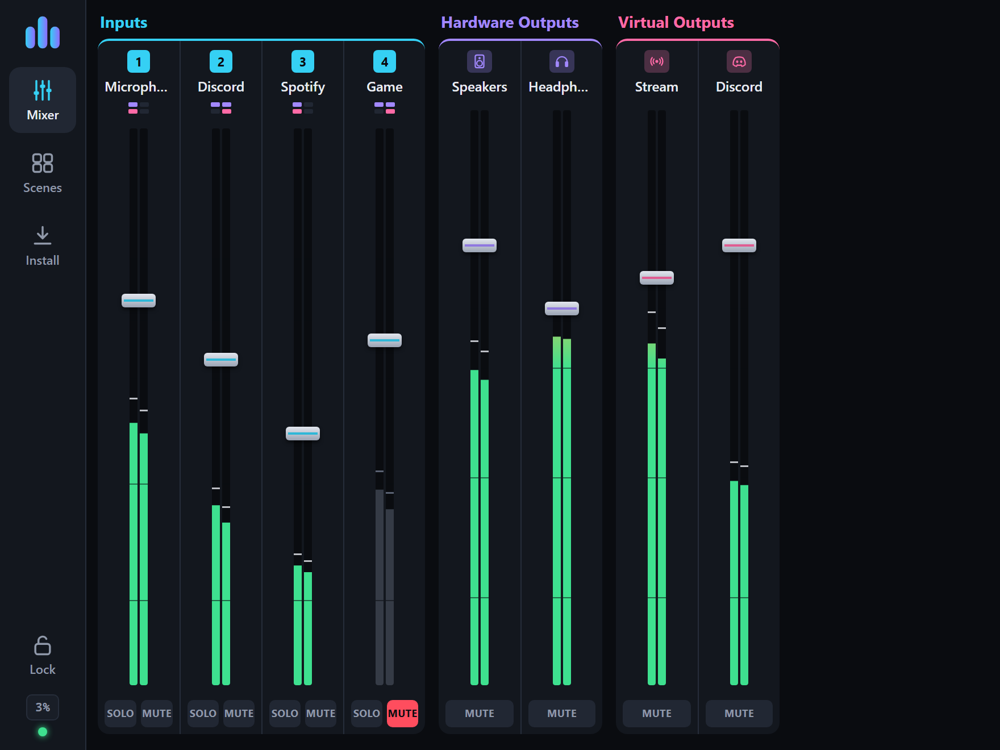
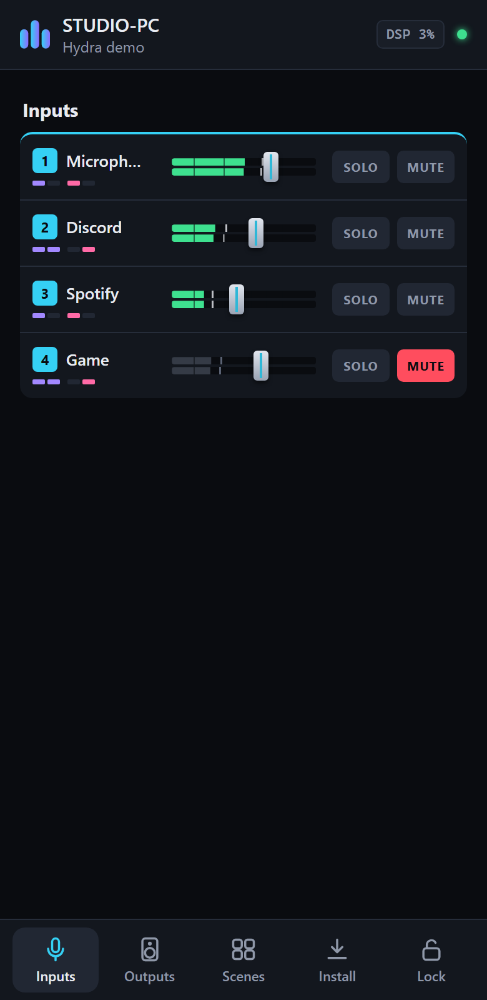

Hydra Mixer is a free, open-source audio mixer for Windows, built for the lowest possible latency. Mix microphones, instruments, games, apps and virtual cables, run them through built-in effects and VST3 plugins and send each mix wherever it needs to go. For streamers, gamers, podcasters or musicians. An alternative to Voicemeeter.Hydra Mixer ist ein kostenloser Open-Source-Audiomixer für Windows, gebaut für die geringstmögliche Latenz. Mische Mikrofone, Instrumente, Spiele, Apps und virtuelle Kabel, schick sie durch eingebaute Effekte und VST3-Plugins und jeden Mix genau dorthin, wo er hin soll. Für Streamer, Gamer, Podcaster oder Musiker. Eine Alternative zu Voicemeeter.
8 + 8hardware and virtual outputsHardware- und virtuelle Ausgänge
10built-in effects, from denoiser to pitch shiftereingebaute Effekte, vom Denoiser bis zum Pitch-Shifter
VST3plugins anywhere in every chainPlugins überall in jeder Kette
Multi-ASIOMulti-ASIOseveral interfaces at once, drift-freemehrere Interfaces gleichzeitig, ohne Drift
Hydra Linkaudio to other PCs and your phoneAudio zu anderen PCs und aufs Handy
How it worksSo funktioniert's
Route your live audioLeite dein Live-Audio, wohin du willst
Every sound gets its own channel strip. The buttons on a strip decide which outputs hear it: your headphones, your speakers, the stream, the recording.Jeder Sound bekommt einen eigenen Kanal. Die Knöpfe am Kanal legen fest, welche Ausgänge ihn hören: Kopfhörer, Lautsprecher, Stream, Aufnahme.
← Swipe to see all channels →← Wischen für alle Kanäle →
Try it: click the routing buttons, MUTE, or drag a fader. Lines show where each sound goes.Probier es aus: Klick auf die Routing-Knöpfe oder MUTE, oder zieh einen Fader. Die Linien zeigen, wohin jeder Sound geht.
EffectsEffekte
Studio effects on every channel.Studio-Effekte auf jedem Kanal.
Built-in effects and your VST3 plugins are blocks in one chain. Drag them into any order, use up to four of each, switch them off without losing settings. Almost all built-in effects add no latency.Eingebaute Effekte und deine VST3-Plugins sind Blöcke in einer Kette. Zieh sie in jede Reihenfolge, nutze bis zu vier von jedem, schalte sie aus, ohne Einstellungen zu verlieren. Fast alle eingebauten Effekte kosten keine Latenz.
← Swipe to see the whole chain →← Wischen für die ganze Kette →
Denoiser
Removes fans, keyboards and room noise from your voice. RNNoise with Hydra's own filter bank, from 0 ms extra delay.Entfernt Lüfter, Tastatur und Raumrauschen aus der Stimme. RNNoise mit Hydras eigener Filterbank, ab 0 ms Zusatzverzögerung.
Equalizer
16 bands, seven filter types, a large window with a live spectrum. Import and export presets.16 Bänder, sieben Filtertypen, ein großes Fenster mit Live-Spektrum. Presets importieren und exportieren.
Gate
Closes between words. With Voice Key it only opens for speech, not for a keyboard click.Schließt zwischen den Wörtern. Mit Voice Key öffnet es nur für Sprache, nicht für Tastenklicks.
CompressorKompressor
Evens out loud and quiet parts. Knee, attack, release, makeup and auto gain, with a live curve.Gleicht laute und leise Stellen aus. Knee, Attack, Release, Makeup und Auto-Gain, mit Live-Kennlinie.
Limiter
A ceiling nothing goes over. Protects ears, speakers and your stream from peaks.Eine Grenze, über die nichts geht. Schützt Ohren, Lautsprecher und Stream vor Spitzen.
Speaker correctionLautsprecher-Korrektur
Measured with a mic in a guided wizard: tames room resonances and lines up left and right speaker.Im Assistenten mit einem Mikro gemessen: zähmt Raumresonanzen und gleicht linken und rechten Lautsprecher an.
Headphone correctionKopfhörer-Korrektur
Pick your headphones from 94 measured models: Hydra makes them neutral, or makes them sound like other headphones.Wähle deinen Kopfhörer aus 94 gemessenen Modellen: Hydra macht ihn neutral oder lässt ihn wie einen anderen klingen.
Utility
Phase, left/right, stereo width, mono bass, balance and gain: the small fixes, without a click when switching.Phase, links/rechts, Stereobreite, Bass in Mono, Balance und Gain: die kleinen Korrekturen, ohne Klicken beim Umschalten.
Transpose
Shifts a song up to two octaves without changing its tempo, finds its key and tunes it to your instrument with one click.Verschiebt einen Song um bis zu zwei Oktaven, ohne das Tempo zu ändern, findet seine Tonart und stimmt ihn mit einem Klick auf dein Instrument.
Stem SeparatorBeta
Splits a song live into vocals, drums, bass, guitar and the rest. Mute the vocals to sing along, or the guitar to play it yourself. Runs on the graphics card.Zerlegt einen Song live in Gesang, Schlagzeug, Bass, Gitarre und den Rest. Gesang stumm zum Mitsingen, Gitarre stumm zum Selberspielen. Läuft auf der Grafikkarte.
VST3 pluginsVST3-Plugins
Any VST3 effect, anywhere in the chain, with its own editor. Plugins are scanned safely, a crashing one is skipped.Jeder VST3-Effekt, an jeder Stelle der Kette, mit eigenem Editor. Plugins werden sicher gescannt, ein abstürzendes wird übersprungen.
Features
Everything streamers, gamers, podcasters and musicians need.Alles, was Streamer, Gamer, Podcaster und Musiker brauchen.
Pick a feature to see it in detail.Wähle ein Feature, um es im Detail zu sehen.
Low-latency engineLatenzarme Engine
Hydra processes everything in the callback of your main device. Nothing waits in a queue unless it has to.Hydra rechnet alles im Callback deines Hauptgeräts. Nichts wartet in einer Warteschlange, wenn es nicht muss.
Several ASIO interfaces at once,Mehrere ASIO-Interfaces gleichzeitig,each sample-accurate within itself.jedes in sich sample-genau.
Auto-reconnect:a device that drops out comes back on its own, the master restarts after driver errors.ein Gerät, das wegfällt, kommt von selbst zurück, der Master startet nach Treiberfehlern neu.
Light on the CPU:Sparsam:about 1.6 % of one core when idle.etwa 1,6 % eines Kerns im Leerlauf.
Put Spotify, a game or the browser on its own channel without any virtual cable. Windows hands Hydra exactly that app's sound.Leg Spotify, ein Spiel oder den Browser ohne virtuelles Kabel auf einen eigenen Kanal. Windows gibt Hydra genau den Ton dieser App.
Several apps can share one channel (tick them in the device picker).Mehrere Apps können sich einen Kanal teilen (in der Geräteauswahl anhaken).
Restart the app and Hydra picks it up again by itself.Startest du die App neu, nimmt Hydra sie von selbst wieder auf.
Virtual cables in one clickVirtuelle Kabel per Klick
Other programs like OBS or Discord need a device to talk to. "Add a virtual cable to this output" is all you click: Hydra sets up the cable, names it after the channel ("Hydra Out 3 - Stream") and hides the side you don't need.Andere Programme wie OBS oder Discord brauchen ein Gerät. „Add a virtual cable to this output“ ist alles, was du klickst: Hydra richtet das Kabel ein, benennt es nach dem Kanal („Hydra Out 3 - Stream“) und versteckt die Seite, die du nicht brauchst.
Works with Virtual Audio Cable. Hydra talks to the cable directly via kernel streaming and steers its clock, so there is no resampling in between.Funktioniert mit Virtual Audio Cable. Hydra spricht das Kabel direkt per Kernel Streaming an und steuert seine Clock, dazwischen wird nichts resampelt.
For cables, stability comes before the last millisecond: the buffer settles where it never drops out.Bei Kabeln geht Stabilität vor der letzten Millisekunde: Der Puffer pendelt sich dort ein, wo er nie aussetzt.
Click on the curve to add a band and drag it where you need it. The large window shows what comes out of the EQ as a live spectrum, only while it is open.Ein Klick auf die Kurve legt ein Band an, ziehen verschiebt es. Das große Fenster zeigt, was aus dem EQ kommt, als Live-Spektrum, nur solange es offen ist.
Put the Stem Separator on Spotify, YouTube or any other input and Hydra splits the music while it plays: vocals, drums, bass, guitar and the rest, each with its own fader, mute and solo. Sing without the original vocals, practise the guitar part over the band, or turn the drums down.Leg den Stem Separator auf Spotify, YouTube oder einen anderen Input, und Hydra zerlegt die Musik, während sie läuft: Gesang, Schlagzeug, Bass, Gitarre und den Rest, jeweils mit eigenem Fader, Mute und Solo. Sing ohne den Originalgesang, übe die Gitarrenspur zur Band oder nimm das Schlagzeug zurück.
Two AI models on the graphics card: Live (about 1.3 s delay) and Fast, Balanced, Best (up to 3.6 s, the best quality).Zwei KI-Modelle auf der Grafikkarte: Live (ca. 1,3 s Verzögerung) sowie Fast, Balanced, Best (bis 3,6 s, beste Qualität).
Made for playing and singing along, not for live microphones. Needs a strong graphics card.Gedacht zum Mitspielen und Mitsingen, nicht für Live-Mikrofone. Braucht eine starke Grafikkarte.
Press SEL on an output and the input faders now set that output's own levels. Music quieter on stream than in your headphones, game louder for you than for Discord.Drück SEL auf einem Ausgang, und die Input-Fader stellen jetzt dessen eigene Pegel ein. Musik im Stream leiser als im Kopfhörer, Spiel für dich lauter als für Discord.
Monitoring: listen to any output's mix on your headphones with one click.Monitoring: Hör den Mix jedes Ausgangs mit einem Klick auf dem Kopfhörer.
MIDI faders follow SEL too.MIDI-Fader folgen SEL ebenfalls.
Your room changes how your speakers sound. A guided wizard measures them with a microphone at one to nine listening positions and builds a correction that tames resonances, without chasing room ripple it can't fix. The waterfall shows which frequencies keep ringing after the sound stops.Dein Raum verändert, wie deine Lautsprecher klingen. Ein Assistent misst sie mit einem Mikrofon an einer bis neun Hörpositionen und baut eine Korrektur, die Resonanzen zähmt, ohne Raum-Welligkeit hinterherzujagen, die man nicht korrigieren kann. Der Wasserfall zeigt, welche Frequenzen nachklingen, wenn der Ton schon vorbei ist.
MeasureMessen
sweeps, optional near-field measurement, mic calibration filesSweeps, optional Nahfeldmessung, Mikro-Kalibrierdateien
filter bands plus left/right timing, zero latency, validate and refineFilterbänder plus Laufzeitausgleich links/rechts, ohne Latenz, prüfen und nachbessern
VST3
"Hydra Room Correction" uses the same corrections in your DAW„Hydra Room Correction“ nutzt dieselben Korrekturen in deiner DAW
Headphones need no measuring: pick yours from 94 measured headphones, headsets and in-ears, and Hydra makes them neutral or makes them sound like another model, say your studio headphones like your gaming headset. Own measurements can be imported.Kopfhörer musst du nicht messen: Wähle deinen aus 94 gemessenen Kopfhörern, Headsets und In-Ears, und Hydra macht ihn neutral oder lässt ihn wie ein anderes Modell klingen, etwa deinen Studiokopfhörer wie dein Gaming-Headset. Eigene Messungen lassen sich importieren.
Send audio between Hydra PCs and to your phone. Another Hydra on the network shows up by itself as a source; picking it as an output is one click in the device picker.Schick Audio zwischen Hydra-PCs und aufs Handy. Ein anderes Hydra im Netz taucht von selbst als Quelle auf; als Ausgang wählst du es mit einem Klick in der Geräteauswahl.
LAN
lossless PCM (16 / 24 / 32-bit float), a few milliseconds of bufferverlustfreies PCM (16 / 24 / 32 Bit float), wenige Millisekunden Puffer
Wi-Fi, internetWLAN, Internet
Opus with error correction; via VPN (Tailscale, ZeroTier) or port forwardingOpus mit Fehlerkorrektur; über VPN (Tailscale, ZeroTier) oder Portweiterleitung
SecuritySicherheit
with a password everything is AES-256 encrypted; without one, Hydra never sends beyond your local networkmit Passwort ist alles AES-256-verschlüsselt; ohne sendet Hydra nie über dein lokales Netz hinaus
Clock
the receiver follows the sender's clock, no drift over hoursder Empfänger folgt der Clock des Senders, keine Drift über Stunden
Hydra Link is Hydra's own protocol and only talks to Hydra and the Hydra Link app.Hydra Link ist Hydras eigenes Protokoll und spricht nur mit Hydra und der Hydra-Link-App.
Phone & tablet remoteHandy & Tablet als FernbedienungBeta


Turn on Settings → Remote, scan the QR code and the browser on your phone becomes a mixer: faders with meters, mute, solo, routing, SEL and scenes. Nothing to install, it only works inside your home network and needs a code.Settings → Remote einschalten, QR-Code scannen, und der Browser deines Handys wird zum Mixer: Fader mit Metern, Mute, Solo, Routing, SEL und Szenen. Nichts zu installieren, es geht nur im Heimnetz und braucht einen Code.
Portrait: channels as a list. Landscape and tablets: vertical strips like in Hydra.Hochformat: Kanäle als Liste. Querformat und Tablet: senkrechte Kanalzüge wie in Hydra.
Faders move relative to your finger, so a touch never makes a level jump.Fader bewegen sich relativ zum Finger, eine Berührung lässt nie einen Pegel springen.
Record any virtual output to WAV (16, 24 or 32-bit float), right from the top bar or the effect chain area. Play WAV, FLAC, MP3 or Ogg files into any output, for example a jingle into the stream.Nimm jeden virtuellen Ausgang als WAV auf (16, 24 oder 32 Bit float), direkt aus der Top-Bar oder dem Bereich der Effektkette. Spiel WAV-, FLAC-, MP3- oder Ogg-Dateien auf jeden Ausgang, zum Beispiel einen Jingle in den Stream.
Waveform while recording, click to jump, loop.Wellenform schon beim Aufnehmen, Klick springt, Loop.
Trim with the handles, "Cut" writes the file (the original goes to the recycle bin).Mit den Griffen trimmen, „Cut“ schreibt die Datei (das Original geht in den Papierkorb).
The Latency Finder shows every input-to-output path as a matrix. Click a cell to see each stage with its milliseconds: device buffer, driver, clock sync, effects, network.Der Latency Finder zeigt jeden Weg von Input zu Ausgang als Matrix. Ein Klick auf ein Feld zeigt jede Stufe mit ihren Millisekunden: Gerätepuffer, Treiber, Clock-Sync, Effekte, Netzwerk.
Sync Delay lines things up: auto sync delays a group of channels to its slowest one, plus a manual delay of up to 500 ms, for example to match the camera on stream.Sync Delay bringt alles zusammen: Auto Sync verzögert eine Gruppe von Kanälen auf ihren langsamsten, dazu ein manuelles Delay bis 500 ms, zum Beispiel passend zur Kamera im Stream.
See what costs CPU, per channel and per effect: one calm table in mixer order, the biggest consumers on top. It only measures while the window is open.Sieh, was CPU kostet, pro Kanal und pro Effekt: eine ruhige Tabelle in Mixer-Reihenfolge, die größten Verbraucher oben. Gemessen wird nur, solange das Fenster offen ist.
Right-click any control and move a fader or knob on your controller: learned. Every switch can get a keyboard shortcut too.Rechtsklick auf einen Regler und am Controller einen Fader oder Knopf bewegen: gelernt. Jeder Schalter kann außerdem ein Tastenkürzel bekommen.
Absolute, toggle, momentary and relative modes, a range per mapping, motor fader feedback.Modi Absolut, Toggle, Momentary und Relativ, Bereich pro Zuweisung, Feedback für Motorfader.
LED feedback for pad grids (APC mini).LED-Feedback für Pad-Grids (APC mini).
Global hotkeys and extra mouse buttons for push-to-talk, also inside a game.Globale Tastenkürzel und Zusatz-Maustasten für Push-to-Talk, auch im Spiel.
Save the whole mixer as a scene ("Gaming", "Podcast", "Late night") and switch with one click, a MIDI button, a hotkey or from your phone. A scene stores every level, switch and effect setting; devices and plugins stay where they are.Speichere den ganzen Mixer als Szene („Gaming“, „Podcast“, „Late night“) und wechsle mit einem Klick, einer MIDI-Taste, einem Tastenkürzel oder vom Handy. Eine Szene speichert alle Pegel, Schalter und Effekteinstellungen; Geräte und Plugins bleiben, wo sie sind.
Coming from Voicemeeter Potato? Load your saved Voicemeeter settings and Hydra takes over what it can:Du kommst von Voicemeeter Potato? Lade deine gespeicherten Voicemeeter-Einstellungen, und Hydra übernimmt, was geht:
devices, ASIO channels, names and routingGeräte, ASIO-Kanäle, Namen und Routing
EQ, gate, compressor and denoiserEQ, Gate, Kompressor und Denoiser
your MIDI mappings, merged with Hydra'sdeine MIDI-Zuweisungen, zusammengeführt mit Hydras
Practise, play along, record.Üben, mitspielen, aufnehmen.
Whether you sing, play guitar, bass, keys or drums: plug in your mic or instrument and Hydra becomes a low-latency practice mixer next to everything else on your PC. No DAW project to open.Ob du singst, Gitarre, Bass, Keyboard oder Schlagzeug spielst: Mikro oder Instrument anschließen, und Hydra wird zum latenzarmen Übungsmixer neben allem anderen auf deinem PC. Kein DAW-Projekt nötig.
Hear yourself, live.Hör dich selbst, live.ASIO master without extra buffers. Your voice with EQ, compressor and reverb, your guitar through an amp simulation, e-drums or keys through any VST3 plugin.ASIO-Master ohne Zusatzpuffer. Deine Stimme mit EQ, Kompressor und Hall, deine Gitarre durch eine Amp-Simulation, E-Drums oder Keys durch jedes VST3-Plugin.
Take your part out of the song.Nimm deinen Part aus dem Song.The Stem Separator splits whatever plays on Spotify or YouTube into vocals, drums, bass, guitar and the rest: mute the vocals to sing yourself, the drums to play them, or solo a part to learn it.Der Stem Separator zerlegt, was auf Spotify oder YouTube läuft, in Gesang, Schlagzeug, Bass, Gitarre und den Rest: Gesang stumm zum Selbersingen, Schlagzeug stumm zum Selbertrommeln, oder einen Part solo zum Lernen.
In your key.In deiner Tonart.Transpose moves the song to a key that suits your voice or your tuning without changing its tempo, finds its key and tunes it to your instrument.Transpose verschiebt den Song in eine Tonart, die zu deiner Stimme oder Stimmung passt, ohne das Tempo zu ändern, findet seine Tonart und stimmt ihn auf dein Instrument.
Record and share.Aufnehmen und teilen.Record to WAV, send the mix to a call, a stream or another PC, calibrate your monitors, learn every control with MIDI.Als WAV aufnehmen, den Mix in einen Call, einen Stream oder an einen anderen PC schicken, Monitore einmessen, jeden Regler per MIDI lernen.
Control Hydra from the couch in any browser, and send audio to and from your phone with the Hydra Link app for Android.Steuere Hydra vom Sofa aus in jedem Browser, und schick Audio mit der Hydra-Link-App für Android aufs Handy und zurück.
Remote in the browser.Fernsteuerung im Browser.Scan the QR code in Settings → Remote. Phones get a list, tablets the strips.QR-Code in Settings → Remote scannen. Handys bekommen eine Liste, Tablets die Kanalzüge.
Wireless monitor.Kabelloser Monitor.Pick your phone as the output of a virtual bus and listen to that mix on it.Wähle dein Handy als Ausgang eines virtuellen Busses und hör diesen Mix darauf.
Phone as a microphone.Handy als Mikrofon.The phone's mic shows up in Hydra as an input source.Das Mikro des Handys erscheint in Hydra als Input-Quelle.
Runs in the background.Läuft im Hintergrund.Low-latency audio, keeps playing with the screen off.Audio mit geringer Latenz, spielt bei ausgeschaltetem Display weiter.
Android 9 or newer, phone and PC on the same network. The app and the remote are in beta.Android 9 oder neuer, Handy und PC im selben Netzwerk. App und Fernsteuerung sind in der Beta.
Download
Free. One file, no account.Kostenlos. Eine Datei, kein Konto.
The buttons always point to the latest release on GitHub.Die Knöpfe zeigen immer auf das neueste Release auf GitHub.
Hydra Mixer for Windowsfür Windows
Windows 10 / 11 · 64-bit
A single .exe: start it and click Install, or just run itEine einzelne .exe: starten und Install klicken, oder einfach ausführen
Updates itself with one clickAktualisiert sich mit einem Klick
Windows 10 or 11, 64-bit, CPU with AVX2Windows 10 oder 11, 64 Bit, CPU mit AVX2
ASIO interface recommended, any Windows device worksASIO-Interface empfohlen, jedes Windows-Gerät geht
Source code, older versions and changelog: Quellcode, ältere Versionen und Changelog: GitHub Releases ·
Windows may show a SmartScreen warning because the app is not code-signed (More info → Run anyway).Windows zeigt eventuell eine SmartScreen-Warnung, weil die App nicht signiert ist (Weitere Informationen → Trotzdem ausführen).
Wiki
From download to your first mix in 2 minutes.Vom Download zum ersten Mix in 2 Minuten.
The wiki walks you through the setup step by step and explains every feature for later reference. Searchable, in English and German.Das Wiki führt Schritt für Schritt durch die Einrichtung und erklärt jede Funktion zum Nachschlagen. Durchsuchbar, auf Deutsch und Englisch.
Is Hydra Mixer really free?Ist Hydra Mixer wirklich kostenlos?
Yes. It is open source under the AGPL-3.0, with no license key, no ads and no account.Ja. Es ist Open Source unter der AGPL-3.0, ohne Lizenzschlüssel, Werbung oder Konto.
Is Hydra complicated to use?Ist Hydra kompliziert zu bedienen?
No. Hydra starts with a ready layout of inputs and outputs. You pick a device with a click in a window that explains every option, and expert settings stay hidden until you switch them on. The small “i” buttons explain what a control does, and the wiki's tutorial gets you to your first mix in about two minutes.Nein. Hydra startet mit einem fertigen Layout aus Inputs und Ausgängen. Geräte wählst du per Klick in einem Fenster, das jede Option erklärt, und Experten-Einstellungen bleiben verborgen, bis du sie einschaltest. Die kleinen „i“-Knöpfe erklären, was ein Regler macht, und das Tutorial im Wiki bringt dich in etwa zwei Minuten zum ersten Mix.
How is it different from Voicemeeter?Was ist anders als bei Voicemeeter?
Hydra is built to be flexible and easy to use: every channel gets its own chain of built-in effects and VST3 plugins in any order, apps can be captured directly without a cable, virtual cables are set up with one click, and every control can be learned by MIDI. Under the hood it stays fast and light: the master device runs without extra buffers, the built-in effects add no delay, and the engine needs about 1.6 % of one CPU core when idle. Your Voicemeeter setup can be imported.Hydra ist auf Flexibilität und einfache Bedienung ausgelegt: Jeder Kanal hat seine eigene Kette aus eingebauten Effekten und VST3-Plugins in beliebiger Reihenfolge, Apps lassen sich ohne Kabel direkt aufnehmen, virtuelle Kabel richtest du mit einem Klick ein, und jedes Bedienelement ist per MIDI lernbar. Darunter bleibt es schnell und sparsam: Das Master-Gerät läuft ohne Zusatzpuffer, die eingebauten Effekte kosten keine Verzögerung, und die Engine braucht im Leerlauf etwa 1,6 % eines CPU-Kerns. Dein Voicemeeter-Setup lässt sich importieren.
What is VAC and why would I want it?Was ist VAC und wozu brauche ich es?
Virtual Audio Cable (VAC) by Eugene Muzychenko adds virtual sound devices to Windows. With it, a virtual output of Hydra shows up in Discord, OBS or Zoom as a normal microphone carrying exactly the mix you built for it. Hydra adds, names and hides the cables for you and connects to them directly, without the extra buffering of Windows audio. You don't need it to capture apps: Hydra records single apps without any cable. VAC is a separate product from its vendor; other cables such as VB-CABLE work too.Virtual Audio Cable (VAC) von Eugene Muzychenko fügt Windows virtuelle Audiogeräte hinzu. Damit erscheint ein virtueller Ausgang von Hydra in Discord, OBS oder Zoom als normales Mikrofon, das genau den Mix trägt, den du dafür gebaut hast. Hydra legt die Kabel für dich an, benennt und versteckt sie und verbindet sich direkt mit ihnen, ohne die Zusatzpuffer von Windows-Audio. Zum Aufnehmen von Apps brauchst du es nicht: Hydra nimmt einzelne Apps ohne Kabel auf. VAC ist ein eigenes Produkt seines Herstellers; andere Kabel wie VB-CABLE funktionieren auch.
Why doesn't Hydra come with its own virtual audio driver?Warum bringt Hydra keinen eigenen virtuellen Audiotreiber mit?
Because Windows only loads audio drivers that Microsoft has signed, and that requires an EV code-signing certificate, which is only issued to registered companies and costs several hundred euros a year. Hydra is a free project by a single developer. An unsigned driver would only run in Windows test mode, with Secure Boot off and games with anti-cheat refusing to start. So Hydra uses existing cables like VAC or VB-CABLE, sets them up for you, and captures apps without any cable. Weil Windows nur Audiotreiber lädt, die Microsoft signiert hat, und dafür braucht man ein EV-Code-Signing-Zertifikat, das nur eingetragene Firmen bekommen und das mehrere hundert Euro im Jahr kostet. Hydra ist ein kostenloses Projekt eines einzelnen Entwicklers. Ein unsignierter Treiber liefe nur im Testmodus von Windows, mit abgeschaltetem Secure Boot, und Spiele mit Anti-Cheat starten dann nicht. Deshalb nutzt Hydra vorhandene Kabel wie VAC oder VB-CABLE, richtet sie für dich ein und nimmt Apps ganz ohne Kabel auf. More in the wikiMehr im Wiki.
Can I use multiple ASIO devices?Kann ich mehrere ASIO-Geräte nutzen?
Yes. One device is the master and sets the clock for the whole mixer. Every other ASIO interface, and every Windows device, is kept in sync with it automatically by an adaptive drift compensation. All channels of one interface stay sample-accurate to each other.Ja. Ein Gerät ist der Master und gibt den Takt für den ganzen Mixer vor. Jedes weitere ASIO-Interface und jedes Windows-Gerät hält Hydra automatisch mit einer adaptiven Drift-Kompensation synchron. Alle Kanäle eines Interfaces bleiben untereinander sample-genau.
Do I need special hardware to run Hydra?Brauche ich spezielle Hardware für Hydra?
No. Windows 10 or 11 (64-bit) and a CPU with AVX2 (practically every PC from the last ten years) are enough, and Hydra works with any sound card through Windows audio. An audio interface with an ASIO driver gives the lowest latency but is optional. Only the Stem Separator (beta) needs a strong graphics card.Nein. Windows 10 oder 11 (64 Bit) und eine CPU mit AVX2 (praktisch jeder PC der letzten zehn Jahre) reichen, und Hydra arbeitet über Windows-Audio mit jeder Soundkarte. Ein Audio-Interface mit ASIO-Treiber bringt die niedrigste Latenz, ist aber optional. Nur der Stem Separator (Beta) braucht eine starke Grafikkarte.
Is there a Mac or Linux version?Gibt es eine Mac- oder Linux-Version?
Not yet. Versions for macOS and Linux are planned once Hydra has reached 1.0. Until then the features are still changing, and porting each of them to every system again and again would slow development down a lot.Noch nicht. Versionen für macOS und Linux sind geplant, sobald Hydra bei 1.0 angekommen ist. Bis dahin ändern sich die Funktionen noch, und jede davon immer wieder auf jedes System zu portieren, würde die Entwicklung stark bremsen.
Found a bug?Einen Fehler gefunden?
Please report it on Bitte melde ihn auf GitHub Issues. The log file %APPDATA%\HydraMixer\hydra.log helps a lot.Die Logdatei %APPDATA%\HydraMixer\hydra.log hilft sehr.
Hydra Mixer is a free virtual audio mixer for Windows, an alternative to Voicemeeter, for streamers, gamers, podcasters and musicians. The wiki walks you through the setup step by step and explains every feature with pictures of what you actually see. Pick a chapter on the left, use the search (/) or go chapter by chapter with the buttons at the end.
Version 0.8.2System Windows 10 / 11, 64-bit, AVX2Drivers ASIO · WASAPIPlugins VST3Control MIDI · hotkeys · phoneNetwork Hydra Link · Android app
Status: early release. The mixer, the UI and the DSP are complete and covered by offline tests. Real-world signal flow with different hardware (several ASIO devices, loopback, VST3, MIDI controllers) has seen little testing so far. Bug reports are welcome: GitHub Issues.
1Installation
Download HydraMixer-0.8.2-win64.exe from the Releases page. It is a single file; nothing else has to be installed.
Start it. If Windows shows a SmartScreen warning (the app is not code-signed yet): More info → Run anyway.
The download is its own installer: a small window offers Install. Hydra copies itself to %LOCALAPPDATA%\Programs\Hydra Mixer (only for your Windows user, no admin rights needed), adds a Start menu entry (optionally a desktop icon) and an entry under Windows Settings → Apps. Tick Allow network access if you want to use the phone remote or Hydra Link: then Windows asks only once, ever.
Or click Run without installing to just try it.
The first start: setup wizard and tour
When there are no settings yet, a short wizard appears. Every choice takes effect immediately:
Start fresh: choose your main device (the master, ideally your ASIO interface), the number of inputs and outputs (the mini strips grow as you click), optionally a virtual cable per virtual output, a VST3 scan (runs in the background) and extras such as start with Windows, phone remote and update checks.
Import from Voicemeeter: pick your saved Voicemeeter XML, see what was taken over (see Voicemeeter import).
I have Hydra settings: load a session.xml or a backup, done.
At the end Hydra offers a guided tour over the real mixer: it dims everything except the part it explains, shows animated routing paths and lets you try each step (open a source, switch on H1, move a fader …). Esc pauses it, Tools → Guided tour continues or restarts it, Tools → Setup wizard opens the wizard again.
Updates
Hydra checks GitHub for a new version shortly after start and every 6 hours. A badge Update 0.9 then appears in the top bar: Update now downloads it, checks its checksum, replaces the running version and restarts with your settings. Later and Skip this version are there too. In Settings → General you can switch the check off or also get beta versions.
Uninstalling
Windows Settings → Apps → Hydra Mixer → Uninstall. Hydra closes, removes autostart, shortcuts, its firewall rule and the Apps entry. Your settings in %APPDATA%\HydraMixer stay unless you tick the box to delete them.
Requirements
Windows 10 or 11, 64-bit.
A CPU with AVX2 (practically every Intel CPU since 2013 and AMD CPU since 2015).
Recommended: an audio interface with an ASIO driver. Without ASIO, Hydra works with Windows audio (WASAPI), with somewhat higher latency.
Building from source
You need the Visual Studio 2026 Build Tools (MSVC, C++ workload), CMake 3.25 or newer and Ninja.
The app ends up in build\Release\HydraMixer_artefacts\Release\Hydra Mixer.exe, the tests in build\Release\HydraTests_artefacts\Release\HydraTests.exe.
2Tutorial: first steps
In this tutorial you set up a typical mix: microphone and game/music in, headphones and stream out.
Shortcut: the setup wizard in Hydra On the first start Hydra opens a setup wizard that does steps 1 and 4 for you (master device, number of channels, virtual cables) and then offers a guided tour over the real mixer. You can open both again any time: Tools → Setup wizard and Tools → Guided tour. See Installation. This tutorial explains the same steps by hand, for later changes or if you skipped the wizard.
Step 1: choose the master device
Click the gear at the top right (or the status text with the driver name in the top bar). Settings → Audio Engine opens.
Under Driver choose ASIO and your interface below it. Without ASIO, use Windows Audio (Low Latency Mode).
Set the Sample rate (usually 48000) and the Buffer size. Smaller buffer = less latency but more CPU load. With ASIO the buffer size is often set in the ASIO Control Panel.
Click Apply / Restart.
Why does this matter? The master device is the clock of the whole mixer. Its inputs and outputs run without any extra buffer, so with the lowest latency. Everything else is adapted to this clock. More under Core concepts.
Step 2: put the microphone on an input
In the first input strip, click the device chip below the channel name. The device picker opens.
On the left choose Hardware, in the middle your interface (the master device comes first), on the right your microphone's channel, e.g. Mono 1. A click applies it right away, a double-click applies and closes.
Speak into the microphone. The level meter in the strip moves. If it is too quiet, turn the GAIN knob at the top of the strip.
Double-click the channel name to rename it, e.g. to “Mic”.
Step 3: bring in a game or music
Open the device picker of the second input and choose Software → Application.
Tick the app, e.g. Spotify.exe. You can tick several apps, they then share this channel. The list only shows apps that are playing audio right now. If it is missing, start playback and click Refresh.
So you don't hear the app twice, set its output in Windows Settings → System → Sound → Volume mixer to a device you don't listen to.
Alternatives: Loopback captures everything Windows plays on a playback device. More under Virtual devices.
Step 4: set up the outputs
On the right you see the Hardware Outputs (H1, H2, …) and the Virtual Outputs (V1, V2, …).
On output H1 click the device chip and choose your headphones or speakers.
For a stream mix, open the device chip of V1, choose Virtual Cable → Add a virtual cable to this output and select that cable in OBS as an audio source (see Virtual cables). Or record V1 with the Recorder.
Optional: right-click an output → Icon, e.g. headphones. The icon then replaces “H1” on the routing buttons.
Step 5: routing
Every input strip has routing buttons H1 H2 H3 … and V1 V2 …. A lit button means: this input goes to this output. Hover over a button and the tooltip says what goes where, e.g. “Spotify → Headphones”.
For the microphone, turn on e.g. V1 (stream); for the music H1 and V1 (you hear it, the stream too).
Use the faders to set the volume. Clicking the dB value below a fader lets you type a value, e.g. -6.
Step 6: improve the microphone
Click the mic strip. Its effect chain appears at the bottom of the window.
Click + and add a Denoiser (removes fans, keyboard, hiss).
Optional: EQ with a low cut at about 80 Hz, Gate with Voice Key, Compressor with Auto Gain. Drag the blocks into the order you want.
Done. Hydra saves every change automatically after about 2 seconds. There is nothing to save by hand. Worth looking at next: MIDI Learn, keyboard shortcuts and scenes.
3Core concepts
Inputs, hardware and virtual outputs
Term
Count
Meaning
Input (IN 1–16)
up to 16, default 8
A signal source: microphone, interface channel, app, loopback, virtual cable. Every input has its own effect chain.
Hardware Output (H1–H8)
up to 8, default 5
An output to real hardware: headphones, speakers, interface outputs.
Virtual Output (V1–V8)
up to 8, default 3
A mix for other programs or the network: stream, recording, Discord, your phone. Usually goes to a virtual cable or Hydra Link.
Hardware and virtual outputs work the same way technically. The differences: the device picker shows hardware for H outputs and software devices for V outputs, room correction exists only on H outputs, the Recorder records V outputs, and monitoring replaces an H output.
A/B and H/V Older Hydra versions and Voicemeeter call the outputs A1… and B1…. Hydra now shows them as H1… (hardware) and V1… (virtual). Your session, MIDI mappings and scenes stay valid, internally nothing has changed.
On outputs the chain can hold Speaker and Headphone Correction, Utility, EQ, Compressor, Limiter and VST3 plugins. It runs before the fader.
The master device as the clock
Every audio device has its own clock, and no two clocks run at exactly the same speed. Hydra solves this like this:
The master device (ideally ASIO) is the only clock. Its channels add no extra latency.
All other devices are attached through a ring buffer and a resampler. A self-tuning drift compensation keeps adjusting the sample rate very slightly so the buffer never runs empty or overflows. This costs a few milliseconds of latency.
Several channels of the same interface stay sample-accurate to each other.
Virtual cables in direct mode don't need a resampler: Hydra steers the cable's clock instead.
Rule of thumb: put the devices where latency matters (microphone, headphones) on the master device. Apps, loopback and second devices are perfectly fine for music, games and streams.
Automatic saving
Every change is saved to session.xml after about 2 seconds. A backup is also made at every start (up to 40). See Backup & Transfer.
4Main window overview
This is what Hydra looks like with eight inputs, three hardware and three virtual outputs:
Top bar: status of the audio engine, DSP load, mini recorder, tools, settings and shut down. It is also the title bar: drag an empty spot to move the window.
Inputs: one strip per sound source (microphone, app, game, cable …). The + next to the heading adds one.
Hardware Outputs (H1, H2 …): your speakers, headphones and interface outputs.
Virtual Outputs (V1, V2 …): mixes for other programs, the stream, a recording, the network.
Effect chain of the selected channel (here input 1, “Mic”): click any strip to see its effects here.
The three groups scroll sideways independently when not all strips fit. At start the window becomes as wide as needed to show all strips. Interface and text size can be set in Settings → Display (75–200 %).
5Top bar
Logo. The empty space of the bar moves the window; a double-click maximises it.
Status: driver, master device, sample rate, buffer size and the I/O latency of the master. The dot is green while the engine runs. A click opens Settings → Audio Engine.
MIDI: lights up when MIDI arrives.
DSP meter: how much of the time per audio block Hydra needs (average). A small mark shows the slowest block of the last second; if a block took longer than 100 % (that is audible as a crackle on every device), bar and number turn red for a few seconds. A click opens DSP Load.
Mini recorder: record, play, stop and the time of the recorder. When space gets tight it turns into a cassette button.
When a new version is available, an Update badge appears left of the tools (see Installation).
6Strips
Input strip
Number and name. Double-click the name to rename.
Device chip: where the sound comes from. A click opens the device picker. A coloured dot shows problems (see below).
GAIN: level before all effects.
PAN: left/right.
Routing to the hardware outputs: a lit button sends this input there. The buttons show the output's icon (or H1, H2 …).
Routing to the virtual outputs (V1, V2 …). Hover a button: the target strip lights up and the tooltip says “Mic → Stream, routed”.
Fader: volume, 0 dB = unchanged.
Level meter left/right. While muted it shows in grey what you would hear.
Value: click to type a number.
MONO: left and right together.
SOLO: only soloed channels play (Shift + click for several).
MUTE.
A click anywhere in a strip selects it: its effect chain appears at the bottom.
Output strip
Icon and name. Right-click → Icon picks one of 18 (speakers, headphones, headset, subwoofer, Discord, OBS, stream, game, music …). The icon then also appears on the routing buttons of every input.
Output device: where this mix goes.
SEL: the input faders now set the levels of this output only (see SEL & monitoring).
Fader of the whole output.
Meter of what leaves the output.
Value.
MONO.
MUTE.
Limiters, EQ and other effects of an output are blocks in its effect chain, not switches on the strip.
Status dots on the device chip
Red: device offline (unplugged, used exclusively by another program, failed). Hydra keeps trying to reconnect it.
Yellow: dropouts in the last 2 minutes, or a notice such as “waiting for the app”.
Green (Hydra Link only): connected.
Hover over the dot: the tooltip explains the problem, for dropouts with count and age (“12 s ago”).
Dividing the space
The strips sit in three groups (Inputs, Hardware Outputs, Virtual Outputs) that scroll sideways independently. If not all strips fit, dividers appear between the groups: drag them to shift the space, double-click for the default. If the window is too low, the strips are scaled down instead of scrolling vertically.
Layout options in Settings → Display:
Adaptive strips (on by default): with room to spare the groups stay compact and centred, and the strips grow a little.
Horizontal channels: one row per channel with the fader lying sideways, for wide and low windows.
Window always as large as needed: the window takes its fitting size whenever it appears or the channels change.
7Using controls
All faders, knobs and switches work the same way:
Drag up/down (knobs) or along the fader. Shift = fine. Double-click = back to the default.
Click the fader track: the fader glides there.
Click the value under a control and type, e.g. -6, 2.5k, -inf.
Mouse wheel: while you scroll through the strips, the wheel keeps scrolling so you don't change something by accident. A control takes the wheel once the mouse has rested on it for a moment, or right after a click. Ctrl + wheel always adjusts.
Click the + next to the heading Inputs, Hardware Outputs or Virtual Outputs. The next free slot is activated (max. 16 inputs, 8 hardware and 8 virtual outputs).
Renaming, copying and removing
Right-click a strip:
Rename.
Copy, Cut, Paste (onto an existing channel: name and device stay), Paste as new channel.
Duplicate: a copy right behind it, MIDI mappings and shortcuts come along.
Delete: resets the channel's settings, plugins, MIDI mappings and shortcuts (with confirmation). At least one input and one hardware output always remain.
Changing the order
Right-click a strip → Change Order.... A bar with Done and Discard appears above the strips.
Drag the strips within their group (inputs, hardware outputs, virtual outputs) to the place you want. The trash can on a strip removes it (only when you click Done).
Done (Enter) applies, Discard (Esc) throws it away.
A channel gets the number of its new position. For buses, routing, sends, recorder and monitor settings move along. If MIDI mappings or shortcuts sit on moved channels, Hydra asks:
Follow the channels: your controller keeps controlling the same channels, now at their new position.
Keep positions: every hardware control stays on its position (fader 1 still controls strip 1, which is now a different channel).
Afterwards the undo history is cleared.
9Device picker
Clicking the device chip of a strip opens the Input source or Output device window. It has three columns: Connection → Device → Channels, and an i button explains the selected connection type.
The connection types, from top to bottom:
Group
Connection type
Used for
Latency
Hardware
Master device
Channels of the master device.
lowest, no extra buffer
Other ASIO Devices
A second ASIO interface, synchronised to the master clock.
Every microphone, headset and speaker Windows knows (shared mode with a small buffer).
low
Software
Application (inputs)
The audio of one or more apps including their child processes; reconnects automatically when an app restarts.
medium
Loopback (inputs)
Everything Windows plays on a playback device.
medium to higher
Voicemeeter
Only shown if Voicemeeter devices exist.
medium
Network
Hydra Link
Audio from / to Hydra on another computer or the Android app, see below.
local network: a few ms; internet: + ping
None at the top means the strip receives nothing, or the output is mixed but not sent anywhere.
What is shown
Hardware outputs (H) list hardware, virtual outputs (V) list software devices, cables and the network. Virtual cables and Voicemeeter devices never show up in the Windows and loopback lists, so you don't pick the wrong end by accident.
Show all devices above the device column lifts these filters. Exception: V outputs never offer hardware.
Windows devices appear in one mode only. With Settings → General → Show all Windows audio modes you also get Exclusive (lowest WASAPI latency, other apps can't use the device meanwhile) and Shared (compatibility).
Devices and channels used by other channels carry a tag, e.g. “IN 2, H1”.
How to use it
A click on a channel applies it right away, the window stays open. A double-click applies and closes.
A click on a device or connection type picks its first channel. For apps, tick one or more.
Dots mark the path to the current choice, a tick marks the current channel.
Channels come as stereo pairs (Stereo 1/2, …) or mono.
Refresh rescans devices and apps. Esc, Enter or Done close the window.
The window follows the strip you clicked last, so you can set up several channels one after another.
Several ASIO interfaces Under Other ASIO Devices you can use more ASIO drivers next to the master. A driver is opened only once, with the buffer size from its own control panel. If it restarts (e.g. after a change in its control panel) or hangs, Hydra reopens it automatically.
Audio over the network (Hydra Link)
Hydra can send audio to Hydra on another computer and receive from it. Turn it on on both computers: Settings → Network → Send and receive audio over the network (Windows may ask once whether Hydra may use the network).
On the sending computer, open the device picker of a V output, choose Hydra Link, the other computer and a codec (Auto fits almost always).
On the receiving computer, open the device picker of an input and choose Hydra Link: the stream shows up there with the bus name and the sending computer.
In the local network the audio travels uncompressed (PCM, a few milliseconds). Outside it (internet, VPN) Opus compresses it to about 128 kbit/s. Computers in the same network find each other by themselves; others are added under Settings → Network → Other computers.
Password Without a network password Hydra Link only talks to computers in the local network, unencrypted. With a password (the same on all computers) everything is encrypted, and only then does Hydra send beyond the local network. Over the internet a VPN such as Tailscale is the easiest way; otherwise the receiving side forwards UDP port 6980 in its router. Hydra Link is not compatible with VBAN.
10Effect Chain
The bottom of the window shows the effect chain of the selected channel: one block per effect, in the order the signal passes through them, from left to right. Click a strip to see its chain. When the chain gets long, it scrolls sideways.
Channel whose chain you see.
BYPASS: switches off the whole chain at once, to compare with and without.
Grip and title: drag a block here to move it. The drop place follows its left edge.
Expand: opens the effect's window with all settings. It stays open and shows the next channel when you click another strip.
On / off of this effect. Switched-off blocks are dimmed but stay adjustable and keep their settings.
Remove the block.
EQ menu (…): import and export EQ settings as .hydraeq files.
+ adds a built-in effect or a VST3 plugin at the end. Right-click a block → Insert after puts one in between.
Up to four blocks of each built-in effect per channel (Stem Separator and Transpose once).
Right-click a block: Copy, Cut, Paste, Paste settings, Duplicate, Delete, Switch on/off, Insert after. Right-click the empty area: copy, paste or clear the whole chain. Chains can be pasted onto other channels.
A channel nobody hears (muted, fader at −∞, not routed to an output in use) pauses its effects to save CPU; the header then says “effects paused: channel not heard”.
Makes headphones neutral or sound like other headphones.
Studio headphones that sound like your headset, or the other way round.
0
Plus any VST3 plugin (amp simulations, reverbs, de-essers …), anywhere in the chain.
11Denoiser
The denoiser removes fans, keyboard clatter, hum and room noise from a voice and leaves the voice itself. It is based on RNNoise, a small neural network for speech, combined with Hydra's own filter bank so it can work with almost no delay. Use it on microphones; on music it removes too much.
In the chain the block only has AMOUNT; the expand button opens the window above with the latency mode and a live view of the detected voice and the removed noise.
Controls
Control
Meaning
DENOISER ON
On/off.
AMOUNT
Mix of the original and the denoised signal. Both are aligned exactly in time, so there are no comb-filter effects.
Latency mode (in the window)
See table.
Mode
Latency
Note
Ultra Low
0 ms
No delay; word onsets can suffer slightly.
Low (default)
10 ms
Good compromise for live speech.
Aligned
20 ms
Better quality.
Native HQ
30 ms
RNNoise's original behaviour, best quality.
Cost: about 1.8 % of one CPU core per stereo channel.
Other sample rates: RNNoise itself works at 48 kHz. At any other engine rate it listens to a resampled copy of the input; the audio stays at the engine rate. Ultra Low, Low and Aligned keep their latency, Native HQ takes a few ms more.
12Stem SeparatorBeta
The Stem Separator splits the music of an input into five parts while it plays: vocals, drums, bass, guitar and the rest (piano, synths, everything else). Each part has its own fader, M (mute) and S (solo). Typical uses: sing along without the original vocals, mute the guitar and play it yourself, practise with the drums only.
Needs a lot of GPU power. Neural networks on the graphics card do the separation (DirectML, any DirectX 12 GPU). On a current mid-range card (e.g. an RTX 5060) one channel takes about 20 % (Live) to 50 % (Best) of the GPU. Older cards, integrated graphics and most laptops are too slow: the separation cannot keep up and the input plays unseparated for a moment. So this is not something for every system. While it runs, games on the same PC get less GPU time.
Getting started
Select the input with the music (e.g. Spotify) and add Stem Separator (beta) with the + of the effect chain. It is always first in the chain, once per input.
Open its settings with the expand symbol in the block title and download the model for the mode you want (once, 165 MB or 352 MB). The download is checked and stored in %APPDATA%\HydraMixer\Models.
Choose the latency mode. After a short start (“Separation starts in x s”) the knobs light up with the level of each stem.
Latency modes
Mode
Delay
Model
Note
Live (default)
about 1.3 s
HT-Demucs (4 stems)
Least GPU load. No guitar stem: the guitar stays in the rest.
Fast
about 2.2 s
BS-RoFormer SW (6 stems)
Best separation, guitar included. The longer the delay, the more context the model hears and the cleaner the result.
Balanced
about 2.8 s
BS-RoFormer SW
Best
about 3.6 s
BS-RoFormer SW
The delay is the price of the quality: the models have to hear a few seconds of music before they can separate it. That is why the Stem Separator is meant for playback (music, videos), not for microphones or anything you monitor live. The delay is shown in the block and counts in the Latency Finder and Sync Delay.
Controls
Control
Meaning
Fader / knob per stem
Level of that stem, −∞ to +12 dB. With all stems at 0 dB you hear exactly the original.
M
Mutes the stem.
S
Only soloed stems play. Click = only this one, Shift + click = several. Solo beats mute.
GPU per model (AUTO)
How much of the GPU one channel may use. More GPU = less delay. Auto uses safe fixed timings; dragging the slider switches Auto off and shows the resulting delay per mode.
A model is on the GPU only while a channel really uses it and is unloaded 15 s after you switch the effect off. Silent passages cost no GPU time.
If the GPU falls behind, that piece plays unseparated (the block shows “x s unseparated in the last 30 s”). Choose a faster mode, close other GPU-heavy programs or use the separator on one channel only.
A second channel with a Stem Separator doubles the GPU load; Hydra asks before adding it.
Beta: the feature is new, feedback welcome. The BS-RoFormer weights are a community model without a stated license, for personal use. HT-Demucs is MIT-licensed.
13Transpose
Transpose shifts the pitch of an input, for example a song from Spotify or YouTube, without changing its tempo. Made for musicians: play or sing along with a song in a key that suits your voice or instrument, or tune a recording that is a few cents off to your instrument. It also listens to the song and tells you its key and how far it is from standard tuning (A = 440 Hz).
Pitch and quality
Control
Meaning
SEMITONES
−24 to +24 semitones (two octaves). +2 turns a song in A minor into B minor.
FINE
−50 to +50 cents, to match a song that is slightly out of standard tuning.
Quality Fast / Normal / High
Latency 100 / 200 / 300 ms while shifting. Higher = cleaner, especially for low notes.
KEEP TIMBRE
Keeps the character of voices (formants) when shifting, so a singer doesn't sound like a cartoon. Works best in Normal and High.
At 0 semitones and 0 cents Transpose passes the sound through unchanged and adds no latency. When you start turning, the original keeps playing until the shifted sound is ready, then it fades over. The latency counts in the Latency Finder only while shifting.
Find the key, tune automatically
Let the song play and click FIND KEY. Hydra listens to about 10 seconds of music (silence doesn't count).
The big box shows the key after your transposition (here B minor, with the song's own key “A minor” below) and how sure Hydra is. On the right: first and second choice with their seven notes; filled notes were really heard.
The middle box shows how many cents the recording is off. AUTO FINETUNE sets FINE so it matches standard tuning (“ct, TUNED”).
Not sure? ADD PART listens to another part of the song (e.g. the chorus) and combines both. FIND NEW KEY starts over.
Good to know Transpose runs on the CPU, about 1–1.5 % of one core per stereo channel. The percentages of the key are an estimate; songs with key changes give mixed results. Pitch shifting is done by the open-source library Signalsmith Stretch (MIT).
14Utility
Utility collects the small fixes every mixer needs: phase, which channel plays where, stereo width, mono bass, balance and gain. It works on every input and output and adds no latency. Even switching costs no click: every change glides.
Control
Meaning
When you need it
Ø Phase
Flips the polarity (both sides).
Two mics on one source sound thin together; a wrongly wired cable.
Left / Stereo / Right / Swap
Left: the left side on both sides. Right: the right side on both. Swap: left and right exchanged.
A mono mic on input 1 of an interface only plays on the left: choose Left.
WIDTH + MONO
0 % = mono, 100 % = unchanged, up to 400 % = wider.
Make music narrower behind a voice, or wider.
Bass Mono + FREQUENCY
Everything below the frequency (default 120 Hz) becomes mono, the rest stays stereo.
Tighter bass on speakers and subwoofers.
BALANCE
Left/right balance.
One speaker is closer to you.
GAIN
±36 dB.
Level correction at any point in the chain.
DC
Removes a DC offset (below 5 Hz).
Cheap interfaces or plugins that leave an offset.
In the chain the block shows Phase, Mono, Channel, Width and Gain; the window has everything. The switch at the top right of the window turns the whole effect on or off. Utility replaces the former Phase block; old sessions are converted automatically.
13Equalizer
Inputs and outputs have the same parametric EQ with 16 bands. A band is only visible (as a coloured point) while it is in use. A new channel starts without points. A band you switch off keeps its values and shows as a hollow point. A chain can hold up to four EQs.
Working with the curve
Action
Effect
Hover near the curve
A ghost point shows where a new band would appear.
Click an empty spot
New band (Bell) at that spot.
Drag a point
Frequency (horizontal) and gain (vertical).
Mouse wheel over a point
Quality (Q).
Double-click / right-click a point
Remove it or change its type.
Type bar + knobs
Type, GAIN, FREQ, Q of the selected band, Remove to delete it.
Filter types
Type
Effect
Typical use
Bell
Boost/cut around a frequency.
More voice presence (+3 dB at 3 kHz), less boom (−4 dB at 250 Hz).
Notch
Very narrow cut.
Remove hum (50/60 Hz) or a whistle.
Band Pass
Only one frequency range remains.
Telephone/radio effect.
High Cut
Removes high frequencies.
Hiss, noise.
Low Cut
Removes low frequencies.
Rumble, mic pops (about 80 Hz).
Low Shelf / High Shelf
Boost or cut everything below/above a frequency.
Overall bass or treble.
Q range 0.1–100, gain ±18 dB.
Large EQ window
The arrow button in the EQ header opens a separate window with a large curve, the bands in use with their values (up to 8 per row, + Add band for a new one) and a live spectrum of the signal after the EQ (scale on the right in dBFS). The window follows the selected channel. The spectrum is only computed while the window is open. Show input adds the spectrum before the EQ in grey behind it, so you see exactly what the EQ changes.
14Speaker & Headphone Correction
Two effects make your speakers and headphones sound right: Speaker Correction measures your speakers in your room, Headphone Correction knows your headphones from a library of measurements. Both add no latency and are blocks on hardware outputs (H), by default before the EQ: the correction fixes the sound, the EQ after it is for taste. Up to four of each per channel.
Speaker Correction
Room correction for your speakers: filter bands plus left/right timing, zero latency. By default the block sits before the EQ: the correction fixes the speakers in the room, the EQ after it is for taste. The block shows the curve and the name of the correction; its switch turns it on and off (MIDI-learnable, undo, scenes).
The picture shows the idea: the grey line is what the microphone measured at your listening position, purple is the correction Hydra builds (only cuts and small boosts, mostly in the bass where rooms cause the biggest problems), white is the result, close to the green target.
Left and right separately: each speaker gets its own bands (recommended, measured in the wizard).
Timing: if one speaker is closer to you, it waits until the sound of the other one arrives (up to 20 ms, on by default).
A correction is made with the calibration wizard. Every correction is kept in a shared library; outputs and the VST3 plugin that use the same correction stay in sync.
VST3 plugin “Hydra Room Correction”: the same correction in your DAW, with zero latency. It loads and edits corrections; measuring is done in Hydra.
Export as an Equalizer APO text file.
Headphone Correction
Every pair of headphones has its own sound: one booms, another hisses. Headphone Correction doesn't measure anything, it knows 94 headphones, headsets and in-ears from published measurements (AutoEq project: oratory1990, Rtings, Kuulokenurkka and others). Pick yours, pick how it should sound, done.
In the picture, Beyerdynamic DT 770 Pro studio headphones should sound like a SteelSeries Arctis 7 headset: orange is the DT 770, the dashed line is the Arctis, blue is the correction Hydra builds, green the result.
Your headphones (left list, searchable, sorted by brand) and Should sound like (right list): Neutral (Harman), Harman without bass, Diffuse field, or any other headphones in the list.
The block shows both choices as menus plus a small curve; the expand button or a click on the curve opens the window.
AMOUNT (0–100 %): how much of the correction is used. Every head is a bit different; if it sounds too much, turn it down.
A correction mostly makes things quieter (to avoid clipping). GAIN (±12 dB) and AUTO MAKEUP give the level back; AUTO MAKEUP makes it as loud as before, the window warns if peaks can then clip.
Add headphones… imports your own measurement (REW, squig.link or AutoEq CSV, .txt, .frd). Right-click it in the list to rename, show or delete it.
The fitted correction is saved with the session, so it keeps working without the measurement file.
Tip Headphone Correction is meant for the output your headphones are on (an H output). On a V output it would change the sound of your stream or call.
15Gate & Voice Key
A gate silences the channel while the signal stays below a threshold, e.g. so the microphone doesn't transmit background noise between sentences. Think of a door: loud enough opens it, silence closes it again.
The block holds THRESH and a meter that shows whether the gate is open; the window has all settings and a live view (state, voice probability, level against the threshold).
Control
Meaning
THRESHOLD
Level at which the gate opens.
RANGE
How much it attenuates when closed (e.g. −80 dB = practically silent, −10 dB = just quieter).
ATTACK
How fast the gate opens.
HOLD
How long it stays open at least.
RELEASE
How fast it closes afterwards.
SIDECHAIN BP + SC FREQ
The gate only “listens” to one frequency range, e.g. to ignore low hum.
VOICE KEY + VOICE THR
The gate only opens when the level is above THRESHOLD and the denoiser detects speech (probability above VOICE THR).
Voice Key needs the denoiser switched on. Without it the gate works as a normal level gate. With Voice Key, keyboard, coughs and clicks stay out even when they are loud.
16Compressor
The compressor evens out volume differences: loud parts are turned down, the result is more even, and with makeup or auto gain everything becomes louder overall. On a voice it means: shouting and whispering end up closer together, nobody has to reach for the volume.
The curve on the right shows input level (horizontal) against output level (vertical). Below the threshold it follows the dashed diagonal (no change), above it bends down according to the ratio. While the window is open, a live dot shows where the signal is right now; when it lags behind the curve you see attack and release at work. The bar below is the current gain reduction (GR).
Control
Meaning
INPUT
Level before the compressor.
THRESH
Compression starts above this level.
RATIO
Strength. 4:1 means: 4 dB more input gives 1 dB more output.
KNEE
Soft transition around the threshold.
ATTACK / RELEASE
Reaction time when kicking in and letting go.
MAKEUP
Raises the level again after the compressor.
AUTO GAIN
Compensates the reduction at 0 dBFS automatically, MAKEUP is then not needed.
Starting point for speech: threshold −20 dB, ratio 3:1, attack 10 ms, release 150 ms, auto gain on.
20Limiter
The limiter is a ceiling: no peak goes above CEILING (e.g. −1 dB), however loud the input gets. Quieter parts stay untouched. It adds no latency.
On a virtual output for the stream or a recording: the stream never clips, even if a game explodes or someone screams.
On a hardware output: protects your ears and speakers.
On an input after a plugin that can get very loud.
Add it with + → Limiter. New outputs start without a limiter; limiters from older sessions stay. GR in the block shows how much it is working: if it works all the time, lower the level before it instead.
Before the fader The output chain runs before the output fader, the limiter too. If you push an output fader above 0 dB, the level can exceed the ceiling.
17VST3 plugins
VST3 plugins are blocks in the same effect chain as the built-in effects, so a plugin can sit anywhere, e.g. between EQ and compressor. They run without extra buffering (their own latency is shown by the Latency Finder). Typical: a guitar amp simulation on your guitar input, a reverb for singing, a de-esser for the stream voice.
Setting up plugins
Settings → Plugins: enter search folders (one per line, the default is the usual VST3 folder) and click Scan for plugins. A plugin that crashes during the scan is remembered and skipped from then on.
In the effect chain: + at the end → choose the plugin.
How to use it
Open the editor: double-click the block or EDIT.
Order, bypass, remove: like every other block (drag, switch in the title, right-click → Delete).
Copy and paste take the plugin's state along.
Stability The audio thread never waits for a plugin that is being loaded or edited. If a plugin can't be loaded, the card says “Plugin could not be loaded”.
18Outputs
Every output (bus) has a fader, mute, mono, its own effect chain (e.g. EQ and limiter), an optional icon and a freely selectable output device. Its chain runs before the fader.
Sends
Every input has its own send level per output (default 0 dB), applied after the strip fader. You set it with SEL.
19SEL & monitoring
SEL: a separate mix per bus
When you press SEL on a bus, the input faders no longer control the overall volume but only each input's level on this bus. Inputs not routed there are dimmed. This lets you build e.g. a stream mix where the music is quieter than in your headphones.
Press SEL on V1. The faders jump to the send levels for V1.
Pull the music fader to −12 dB. The music is now quieter on the stream, unchanged in your headphones.
Press SEL again to return to the normal view.
Only one bus can have SEL at a time. A MIDI fader that controls an input's main fader also controls the send while SEL is active; motor faders jump along.
Monitoring
In Settings → General → MONITORING (SEL) turn on Monitor selected bus and choose the Monitor output (H1–H5). The SEL output then replaces the sum of this hardware output: on your headphones you hear exactly the mix you are editing (e.g. the stream). Effect chain and fader of the monitor output still apply. The output strip shows “monitoring V1”.
20Recorder
The recorder records a virtual output (V) as WAV and plays audio files into any outputs. Open it via Tools → Recorder or the time display in the top bar. It has three areas:
Area
Contents
Record Source (left)
Which V output is recorded, target folder (default Documents\Hydra Recordings, files named Hydra_V1_…), format WAV 16 / 24 / 32-bit float.
Recording (middle)
Transport, time, waveform, file name, load/show/delete file.
Play To (right)
Hardware and virtual outputs the playback goes to, and the playback level.
Transport
Symbol
Function
● Record
Starts recording the selected V output (after its fader). A second click stops.
▶ / ❚❚
Play / pause. Pause remembers the position. At the end of the file it goes back to 0.
■ Stop
Ends recording and playback, position back to 0.
Loop
Repeats the file or the trim range.
Trash can
Unloads the file and moves it to the Windows Recycle Bin (with confirmation).
Waveform, seek and trim
The waveform grows live while recording.
Clicking or dragging in the waveform jumps there. While stopped, this sets the start point for play.
Dragging the handles at the left and right edge inwards sets the in and out points (non-destructive, outside is greyed out). Playback and loop stay within this range.
Cut writes the range to the file (WAV: the original goes to the Recycle Bin; other formats: new file name_trimmed.wav). Reset moves the handles back.
WAV, AIFF, FLAC, Ogg and MP3 can be played, with automatic sample rate conversion. Last Take loads the most recent recording.
21Scenes
A scene is a snapshot of all mixer parameters (faders, mutes, routing, effects, sends …). Not included: devices, channel names, plugins and which channels are in use. Typical scenes: “Gaming”, “Stream”, “Call”, “Music”.
Open: Tools → Scene Editor. The scenes appear as a panel on the left of the main window.
Action
Effect
+ / New scene
New scene from the current mixer.
Click a scene
Loads it right away (no question asked) and makes it the scene being edited.
Change the mixer
The row shows “edited - not saved” and the number of changes.
Save (disk)
Stores the current mixer in the scene.
Recall (arrow back)
Loads the scene again and drops the unsaved changes.
Scenes can be exported and imported as a .hydrascenes file (all or just the selected one). When you delete or move scenes, their MIDI mappings and shortcuts move along.
22Latency Finder
Tools → Latency Finder shows how much delay every path from input to output has and where it comes from. It is the only place in Hydra that shows latency values.
Layout
Matrix (top): inputs × outputs with the total latency of every routed path. Click a cell to see exactly this path.
Signal flow: input device → denoiser → each plugin → sync delay → bus plugins → output device. Each stage shows “+x ms” (what it adds), its share in % and “at y ms” (the sum so far).
Latency share: donut and ranking of the shares for the selected path.
Hovering over an input or output device explains in a tooltip what its latency is made of (buffer, driver/converter, clock sync buffer) and how to reduce it. Clicking a row also selects the channel in the main window.
Reducing latency
Smaller buffer size in the ASIO control panel or in Settings → Audio Engine.
Put important channels on the master device (no clock sync buffer).
Windows devices in Exclusive or Low Latency mode instead of Shared.
Denoiser mode Ultra Low or Low.
Switch plugins with lookahead to their zero-latency mode or bypass them.
23Sync Delay
Different devices have different latency. If, for example, one source arrives over a slower path than the microphone, or two outputs drift apart in time, Sync Delay lines them up.
Open: Tools → Sync Delay. For each group (inputs, hardware outputs, virtual outputs) you see every channel with:
Column
Meaning
LATENCY
The channel's own latency.
AUTO SYNC
Switch. All channels of a group with Auto sync are delayed to the slowest of them. The slowest one is marked “slowest: sets the time”.
AUTO DELAY
Automatically computed delay, follows the live latency.
MANUAL DELAY
Extra delay by hand (0–500 ms), e.g. for a microphone that is further away or for lip sync on a stream.
RESULT
Total. The bar shows own latency (solid) and delay (hatched).
Sync all / Sync none switch Auto sync for the whole group. Delay values can be MIDI-learned and are part of undo and scenes. Changes are applied with a short crossfade.
24DSP Load
Click the DSP meter in the top bar (or Tools → DSP Load) to see what costs how much processing time. Values are shares of the time available per audio block, averaged over 1 second, with peak.
Total load as a bar with peak marker.
Biggest consumers: the three most expensive stages.
Table: one row per channel in mixer order, columns Denoiser / EQ / Gate / Comp / Plugins / Limiter / Rest. Cells are tinted by load.
Engine row: resampling of secondary devices, recorder, mixing.
Measuring only happens while the window is open. Clicking a row selects the channel in the mixer.
Guideline Below about 50 % you are on the safe side. If the peak approaches 100 %, crackles are likely: increase the buffer or reduce expensive plugins/denoisers.
25Room calibration
Measures how your speakers sound in your room and builds a correction from it. Open Tools → Room Correction or the expand button of a Correction block. The window has the tabs Correction, Calibrate, Analysis and Edit; it follows the selected hardware output. On the left are the saved corrections and measurements.
The wizard
+ Calibrate speakers starts a step-by-step wizard:
Speakers: which output, and left/right separately (recommended) or both together.
Microphone: the input with your measurement microphone, or Other device (not on a channel)…; Hydra then opens it only for measuring. A level bar shows the signal. Optional: the calibration file of your microphone (REW / miniDSP UMIK / Dayton format).
Near field (optional): the microphone 1–2 cm in front of each speaker, for a cleaner curve in the treble and the distance between microphone and speakers.
Placement: Quick (1 position), Standard (5) or Thorough (9) microphone positions around your listening position. More positions = a correction for the whole listening area instead of one spot.
Level: pink noise plays; turn speakers or microphone gain until the bar is in the green range.
Measure: a 5-second sweep per position and speaker. Step back and keep quiet. If the near field was measured, the window shows where the microphone is and whether it is at the right mark.
Result: before/after curve, presets for Strength (Gentle, Balanced, Strong) and Range (Bass, Extended, Full range). Apply correction, then compare with and without by one click.
Analysis and editing
Analysis: frequency response, 3D waterfall (frequencies that keep ringing), decay times (RT60), impulse, and a list of room resonances.
Edit: change range, strength, boost limit and level; changes apply at once. Check measures again through the correction, Refine correction adds a few bands for what is left.
Measurements are kept in %APPDATA%\HydraMixer\Measurements (Load, Rename, Mic calibration, Delete, Export).
Tip Use the near-field step and at least Standard: above 400 Hz the correction then follows the speaker itself and doesn't try to fix room reflections, which can't be corrected well.
26Undo / redo
Ctrl+Z undoes the last change, Ctrl+Y (or Ctrl+Shift+Z) redoes it. This works in the main window and in all tool windows. A notice shows what was undone.
All saved parameters are tracked in one history: faders, routing, EQ, gate and so on. Up to 200 steps.
A step is created once a movement is finished (mouse released and a short pause).
Not tracked: changes by MIDI, adding/removing channels, names, devices, plugins.
27MIDI Learn
Every control and switch in Hydra can be operated with a MIDI controller.
Setup
Settings → MIDI: enable your controller under MIDI inputs (controllers). Optionally choose the same controller as Feedback output (for LEDs and motor faders).
Right-click a control → MIDI Learn.
Move the hardware control or press the button. Done.
For many assignments in a row: Tools → MIDI Learn Mode. Then a left click on the control and a move on the controller is enough, for as many controls as you like. The wrench turns yellow and the status line shows a hint.
Modes
Mode
Behaviour
For
Absolute
Position of the hardware control = value.
Faders, pots
Toggle
Every press switches.
Mute buttons
Momentary
On while held.
Push-to-talk
Relative
Endless encoders send steps.
Encoders without end stops
CC, note and pitch bend are supported. Every mapping can be inverted.
MIDI Map
Tools → MIDI Map lists all mappings in a table: change mode, invert, range, delete single mappings or Remove all.
MIDI range
Right-click → MIDI Range (calibrate) sets which value range the hardware control covers, e.g. only −∞ to 0 dB. This gives you finer resolution in the range you use. Options: current value as minimum/maximum, presets (Fader: -inf .. 0 dB, -inf .. +6 dB, Full range) or type values in the MIDI Map. A yellow bar on the fader shows the range. Feedback to motor faders is scaled accordingly.
Globally: Settings → MIDI → MIDI faders stop at 0 dB sets the maximum of all fader mappings to 0 dB (instead of +12 dB), also for faders learned later.
28APC mini & LED feedback
For controllers with a pad grid (e.g. Akai APC mini), Hydra colours the pads by state:
Pad
Colour (APC mini)
Mapped and on
Green
Mapped and off
Yellow
Unmapped, in the row/column of a muted channel
Red
Unmapped
Off
Hydra detects automatically whether the grid is laid out by rows or columns. Profiles under Settings → MIDI → LED feedback profile: Generic, APC mini mk1, APC mini mk2. Choosing an “APC MINI” as feedback output selects the matching profile automatically. All LEDs go off when Hydra shuts down.
At start Hydra asks an APC mini for its current fader positions so mixer and hardware match (not yet confirmed for the mk1). Other controllers can't report their position: there Hydra takes the value once you move the fader.
29Keyboard shortcuts
Every switch (mute, solo, routing, SEL, scenes, recorder …) can be put on a key or mouse button.
Right-click the switch → Assign Keyboard Shortcut...
Press the key combination or mouse button you want.
Combination
Works
With Ctrl or Alt, or an F key
Globally, also in games or while Hydra is in the tray.
Without modifier (e.g. just M)
Only while Hydra has the focus.
Middle mouse button, thumb buttons (optionally with Ctrl/Alt/Shift)
Always globally. The click is also passed on to the other app.
If another app has already registered the combination globally, it only works in Hydra while focused (a notice tells you). Change or remove it from the same right-click menu.
30Phone & tablet remote
Control Hydra from the browser of a phone or tablet in the same network: faders, mute, solo, mono, routing, SEL and scenes, with live meters. Nothing to install.
In Hydra: Settings → Remote → Control Hydra from phones and tablets. Windows may ask once whether Hydra may use the network.
Scan the QR code with the phone. The page opens and connects by itself (the QR code contains the access code).
Optional: in the browser menu, Add to Home screen, then it opens like an app.
Tabs Inputs, Outputs and Scenes; on tablets the mixer is shown in two columns.
Faders move relative to your finger and never jump, double-tap = default value.
Changes from the phone count like MIDI: they don't create undo steps.
Devices, effects and channels can't be changed from the phone.
Security The remote only accepts devices in the local network and needs the 8-character access code. New code disconnects every device. The connection is not encrypted, so only use it in your own network.
31Android app (Hydra Link)
The Android app Hydra Link connects your phone to Hydra over Wi-Fi: listen to a Hydra mix on the phone (e.g. as wireless headphones), use the phone as a microphone, and control the mixer. It is in beta. Requirements: Android 9 or newer, phone and PC in the same network, Hydra Link switched on in Hydra (Settings → Network).
Installing and connecting
Download the APK from the download section on the phone (or via Install in the phone remote), open it and allow the installation.
Start the app and allow microphone and notifications.
On the Audio page your PC appears under Hydra. Tap it: Hydra asks on the PC whether this phone may connect. Allow, and both remember each other. That's the whole setup.
Playback and microphone
Playback: in Hydra open the device chip of a V output → Hydra Link → your phone. The phone plays everything Hydra sends it, also with the screen off. Tap the tile to mute; it shows which phone output is used (Bluetooth, USB, speaker).
Microphone: the phone sends its microphone automatically. In Hydra choose it as an input: device chip → Hydra Link → Mic from <phone>. Tap the tile on the phone to mute.
Mixer and Scenes: the app shows Hydra's phone remote, already signed in.
Version 1 The app only works in the local network and without a network password. Bluetooth headphones add their own delay.
32Settings
Open them with the gear in the top bar. The small i buttons explain each section.
Tab
Contents
General
Start with Windows (high priority; if the ASIO driver isn't ready yet, Hydra keeps retrying for 90 s), system tray (close/minimise to the tray, start hidden), devices (Reconnect devices automatically when they are back, Show all Windows audio modes), monitoring (SEL), shut down.
Display
Interface size and text size (75–200 %), theme (Default / Legacy), layout options (see Strips), experimental options.
If the master device fails or falls silent, Hydra restarts the audio engine by itself after half a second (with growing pauses if it keeps failing). Every attempt is noted in hydra.log.
33Backup & Transfer
Automatic backups
Hydra keeps a copy of your settings at every start and before every import (up to 40, duplicates are skipped). In Settings → Backup & Transfer → Automatic Backups pick one and click Restore. Open Folder shows the folder.
Export / import
Export Settings... saves all settings to a file, e.g. for another PC. Import Settings... loads them (the current ones are backed up first).
Safety measures
The session file is written atomically, a crash while saving doesn't damage it.
An unreadable session.xml is moved aside instead of overwritten.
If the file was changed from outside, Hydra backs it up before the next save.
34Voicemeeter import
If you are coming from Voicemeeter Potato, you can take over your settings.
In Voicemeeter: Menu → Save Settings saves an XML file (often in Documents).
Close Voicemeeter so the ASIO driver is free.
In Hydra: Settings → Backup & Transfer → Import from Voicemeeter. Hydra looks in Documents, otherwise use Browse.... Then Import.
Taken over: devices, ASIO channel patches, names, routing, EQ, gate, compressor, denoiser and the MIDI mappings (existing Hydra mappings stay, except on conflicts). Your current Hydra settings are replaced, but backed up first.
Differences from Voicemeeter
Voicemeeter
Hydra
Virtual inputs and B buses as Windows devices
Become “Hydra Virtual” placeholders (yellow dot). Give them a cable with Auto-assign cables, see Virtual cables.
A1… and B1…
Shown as H1… (hardware) and V1… (virtual).
Mono on an ASIO channel pair
Imported as a single mono channel (no −6 dB loss when the second input is empty).
Not supported. Between Hydras use Hydra Link instead (its own protocol, encrypted with a password).
Bus modes (Composite, Upmix …)
Not available.
35Virtual cables
A virtual cable is a Windows audio device that other programs can choose. What one side plays comes out on the other side. Hydra uses them so that, for example, Discord can play into a Hydra input, or OBS can record a Hydra output as a microphone.
Hydra works with Virtual Audio Cable (VAC) and manages the cables for you. Other cables such as VB-CABLE work too.
Why doesn't Hydra bring its own audio driver?
A virtual sound device is a kernel driver: it runs inside Windows itself, with full access to the system. That is why Windows only loads such a driver if Microsoft has signed it:
The developer needs an EV code-signing certificate. It is only issued to registered companies after an identity check and costs several hundred euros every year.
With it, every driver version has to be submitted to Microsoft and signed there (attestation) before Windows accepts it.
A driver without this signature only loads in Windows test mode: Secure Boot has to be switched off, a “Test Mode” watermark stays on the desktop, and games with anti-cheat (Valorant, Fortnite, Call of Duty …) refuse to start. Nobody should have to do that to their PC for a mixer.
Borrowing someone else's signature (e.g. Voicemeeter's) is not possible: a signature belongs to exactly the driver it was made for.
Hydra is a free project by a single developer, not a company, so a signed driver of its own isn't possible at the moment. Instead Hydra makes the existing cables as easy as possible: it adds them, names them after your channels, hides the sides you don't need and connects to them directly. And for the most common case, getting the sound of an app into the mixer, it needs no cable at all (Application capture is built into Windows).
One cable per channel
Open the device chip of an input or a V output and choose Virtual Cable.
Click Add a virtual cable to this input (or output). Hydra takes a free cable, or adds one (Windows asks once for administrator rights).
In the other program choose the cable named after the channel, e.g. “Hydra In 4 - Discord” as speaker in Discord, or “Hydra Out 3” as microphone in OBS.
Hydra talks to the cable directly via kernel streaming (Connect cables directly, on by default) and drives the cable's clock, so there is no resampling.
The side of the cable that Hydra uses and unused cables are hidden from other apps, so the device lists stay tidy.
Renaming happens without a UAC prompt each time: Windows asks once to set up a task for it.
Cables need stability more than the last millisecond: after a dropout their buffer stays a little larger.
Without cables
Application (built in)
Captures the audio of one or more apps. Nothing to install. Set the app's output in the Windows volume mixer to a device you don't listen to.
Loopback (built in)
Captures everything Windows plays on a playback device. Somewhat more latency.
Other cables
VB-CABLE and Hi-Fi Cable are detected too and appear in the device picker.
Voicemeeter's devices
If Voicemeeter is installed, its devices stay usable through the “Voicemeeter” category. Close Voicemeeter itself.
Tools → Cable Manager shows every cable with both sides, who uses it, format, timing and health (over-/underflows). Settings → Virtual Cables → Auto-assign cables gives every “Hydra Virtual” placeholder (e.g. from a Voicemeeter import) a cable.
36Recipes
Stream mix with its own music volume
Route microphone and music to H1 (headphones) and V1.
V1 → Virtual Cable → Add a virtual cable to this output; in OBS choose “Hydra Out 1” as audio source.
SEL on V1, music fader to about −15 dB. SEL off.
Optional: add a limiter block on V1 with a ceiling of −1 dB.
Clean microphone for calls
Denoiser on (mode Low), amount 100 %.
EQ: low cut at 80 Hz, bell +2 dB at 3 kHz.
Gate on with Voice Key, threshold just above the noise floor.
Compressor: ratio 3:1, auto gain on.
Discord mix on V2 → its own virtual cable → choose “Hydra Out 2” as microphone in Discord.
Push-to-talk / mute key in a game
Right-click the microphone's MUTE → Assign Keyboard Shortcut → e.g. Ctrl+F12 or the mouse's thumb button.
For push-to-talk by MIDI: learn the button and choose mode Momentary in the MIDI Map (with invert, so pressing = unmuted).
Switching between setups
Set up the mixer for “Gaming”, new scene in the Scene Editor, Save.
Repeat for “Stream”.
Right-click each scene → keyboard shortcut or MIDI button.
Picture and sound in sync on a stream
Read the latency of the stream bus in the Latency Finder.
In Sync Delay set a manual delay on the microphone input until lips and sound match, or use Auto sync in the group.
Recording a session
Route everything that should be on the recording to V3.
Recorder: Record Source V3, format WAV 24, press record.
Afterwards set start/end with the trim handles and Cut.
37For musicians
Hydra is not only for streams and calls. Singers, guitarists, bassists, keyboarders and drummers: with an audio interface it becomes a practice and play-along mixer that runs next to everything else on your PC, without opening a DAW.
Voice or instrument through plugins, with low latency
Make your audio interface the master device with ASIO and a small buffer (64 or 128 samples): its channels run without any extra buffer.
Put your mic or instrument on an input (e.g. Master → Mono 1). For singing: EQ, compressor and a reverb plugin. For guitar or bass: an amp simulation as a VST3 plugin. E-drums and keyboards with audio outputs work the same way.
Route it to your headphones (H1). The Latency Finder shows exactly how many milliseconds it takes from the jack to your ears.
Play along with any song
Capture Spotify, YouTube or your music player as an Application input. No cable needed.
Stem Separator (beta): mute the vocals, drums, bass or guitar of the song and sing or play that part yourself, or solo it to learn it.
Transpose: shift the song to a key that suits your voice or a tuning you play in (e.g. −1 semitone for guitars tuned to E♭). FIND KEY tells you the key, AUTO FINETUNE matches a recording that is a few cents off to your tuned instrument.
Your instrument and the song meet in your headphones, each with its own fader.
Record yourself, share it
Route instrument and backing to a virtual output and record it with the Recorder (WAV up to 32-bit float), trim, done.
Send the same mix to a call, a stream or another PC with Hydra Link (lossless in the local network).
And in the studio
Several ASIO interfaces at once, kept in sync automatically.
Room calibration for your monitors, also as the VST3 plugin Hydra Room Correction in your DAW, with zero latency.
Every control can be learned by a MIDI controller, with motor-fader feedback.
37Mouse & keyboard
Where
Input
Effect
Everywhere
Ctrl+Z / Ctrl+Y
Undo / redo
Control
Double-click
Default value
Control
Shift + drag / mouse wheel
Fine adjustment
Control
Ctrl + mouse wheel
Always changes the value, even while scrolling
Control
Click the value
Type a value (-6, 2.5k, -inf)
Control / switch
Right-click
MIDI Learn, range, shortcut, reset
Fader
Click the track
Fader glides there
Strip
Click
Show its effect chain
Strip name
Double-click
Rename
Strip
Right-click
Rename, Copy/Paste, Duplicate, Delete, Icon (outputs), Change Order
Strip area
Mouse wheel
Scroll sideways
Inputs/outputs divider
Drag / double-click
Divide space / default
Change Order
Enter / Esc
Done / Discard
EQ curve
Click an empty spot
Add a band
EQ point
Mouse wheel
Change Q
EQ point
Double-click / right-click
Remove / type
Effect block
Drag the title / right-click
Reorder / copy, paste, duplicate, delete
Plugin block
Double-click
Open editor
Waveform
Click / drag the edges
Seek / trim
Dialogs
Enter / Esc
Confirm / cancel
Device picker
Double-click a channel
Apply and close
38Troubleshooting
No sound at all
Check the status text in the top bar: if it says the engine is stopped, click it and choose a device in Settings → Audio Engine.
Is the input routed to a bus, and does the bus have an output device?
Mute, solo on another channel, fader at −∞?
Is Voicemeeter or a DAW running that holds the ASIO driver? Close it.
If the driver silently stops delivering audio: Tools → Restart Audio Engine.
Crackles and dropouts
Yellow dot on the device chip? The tooltip shows how many dropouts and when.
On the master: increase the buffer size (e.g. from 64 to 128 samples).
Open DSP Load: if the peak is near 100 %, reduce expensive plugins or denoisers.
Set the Windows power plan to “High performance”, avoid Bluetooth devices.
Red dot on a device
The device is offline: unplugged, held exclusively by another app or the driver crashed. Hydra reopens secondary ASIO devices automatically. Otherwise choose the device again or use Restart Audio Engine.
Yellow dot “waiting for app”
The chosen app isn't running or isn't playing audio right now. Hydra connects automatically as soon as it plays.
Yellow dot “Hydra Virtual”
A placeholder from a Voicemeeter import. Assign a real source or use Settings → Virtual Cables → Auto-assign cables.
App missing from the “Application” list
Only apps that are playing audio right now appear. Start playback, then Refresh.
I hear an app twice
With application capture the app keeps playing to its Windows device. In the Windows volume mixer, set its output to a device you don't listen to.
Global shortcut doesn't work in a game
Use a combination with Ctrl or Alt, or an F key. If Hydra reports that it is taken by another app, choose a different combination.
Phone doesn't find Hydra
Phone and PC must be in the same network (no guest Wi-Fi). Allow Hydra in the Windows firewall prompt; for the Android app, Hydra Link must be on and no network password set. Type the PC's IP by hand if discovery fails.
Settings gone or broken
Settings → Backup & Transfer → Automatic Backups → pick a backup → Restore.
39Files & folders
Path
Contents
%APPDATA%\HydraMixer\session.xml
All settings (saved automatically).
%APPDATA%\HydraMixer\backups\
Automatic backups (max. 40).
%APPDATA%\HydraMixer\plugins.xml
List of scanned VST3 plugins.
%APPDATA%\HydraMixer\scan-crash.txt
Plugins that crashed during the scan.
%APPDATA%\HydraMixer\hydra.log
Log (starts, saves, device errors). Attach it to bug reports.
%APPDATA%\HydraMixer\Corrections\, Measurements\
Room corrections and measurements.
%APPDATA%\HydraMixer\Models\, Runtime\
Stem Separator: the downloaded models and the GPU runtime (ONNX Runtime + DirectML, unpacked from the exe on first use). Safe to delete; Hydra unpacks it again.
Documents\Hydra Recordings\
Default folder for recordings.
*.hydrascenes
Exported scenes.
Type %APPDATA% into the Explorer address bar to open the folder.
40Glossary
ASIO
Steinberg's driver interface for audio interfaces with very low latency. Only one program can use a driver at a time.
WASAPI
The Windows audio interface. Shared = several apps share the device, Exclusive = one app alone, Low Latency = shared with a small buffer.
Master device
The device whose clock drives the whole mixer.
Buffer / buffer size
Number of samples per processing block. 128 samples at 48 kHz ≈ 2.7 ms.
Latency
Delay between input and output.
Dropout / xrun
A block arrived too late or was missing, audible as a crackle.
Drift
Two device clocks run at slightly different speeds. Hydra compensates by resampling.
Loopback
Capturing what a playback device plays.
Bus / output
Sum of several inputs with its own processing and its own output device. H = hardware output, V = virtual output (A/B in Voicemeeter).
Virtual cable
A Windows audio device whose output comes back in on its other side; connects Hydra with other programs.
Hydra Link
Hydra's own protocol for audio over the network (not VBAN).
Opus
Audio codec with very low delay; Hydra Link uses it outside the local network.
Send
The level at which an input goes to a particular bus.
Insert
An effect directly in a channel's signal path.
dBFS
Decibels relative to digital full scale (0 dBFS = maximum).
Q
Quality of an EQ band: high = narrow, low = wide.
RNNoise
Free noise suppression based on a neural network (Xiph.org).
VST3
Plugin format for audio effects.
Hydra Mixer Wiki
Hydra Mixer ist ein kostenloser virtueller Audiomixer für Windows, eine Alternative zu Voicemeeter, für Streamer, Gamer, Podcaster und Musiker. Das Wiki führt dich Schritt für Schritt durch die Einrichtung und erklärt jede Funktion mit Bildern davon, was du tatsächlich siehst. Wähle links ein Kapitel, nutze die Suche (/) oder geh mit den Knöpfen am Ende Kapitel für Kapitel weiter.
Version 0.8.2System Windows 10 / 11, 64 Bit, AVX2Treiber ASIO · WASAPIPlugins VST3Steuerung MIDI · Hotkeys · HandyNetzwerk Hydra Link · Android-App
Status: frühe Version. Mixer, Oberfläche und DSP sind fertig und durch Offline-Tests abgedeckt. Der echte Signalfluss mit verschiedener Hardware (mehrere ASIO-Geräte, Loopback, VST3, MIDI-Controller) ist noch wenig erprobt. Fehlerberichte sind willkommen: GitHub Issues.
1Installation
Lade HydraMixer-0.8.2-win64.exe von der Releases-Seite herunter. Es ist eine einzige Datei, sonst muss nichts installiert werden.
Starte sie. Zeigt Windows eine SmartScreen-Warnung (die App ist noch nicht signiert): Weitere Informationen → Trotzdem ausführen.
Der Download ist sein eigener Installer: Ein kleines Fenster bietet Install an. Hydra kopiert sich nach %LOCALAPPDATA%\Programs\Hydra Mixer (nur für deinen Windows-Benutzer, ohne Admin-Rechte), legt einen Startmenü-Eintrag an (auf Wunsch ein Desktop-Symbol) und einen Eintrag unter Windows-Einstellungen → Apps. Hake Allow network access an, wenn du die Handy-Fernsteuerung oder Hydra Link nutzen willst: Dann fragt Windows nur ein einziges Mal.
Oder klick Run without installing, um es nur auszuprobieren.
Der erste Start: Einrichtungs-Assistent und Tour
Gibt es noch keine Einstellungen, erscheint ein kurzer Assistent. Jede Wahl wirkt sofort:
Start fresh: Hauptgerät wählen (der Master, am besten dein ASIO-Interface), Anzahl der Inputs und Ausgänge (die Mini-Strips wachsen beim Klicken mit), auf Wunsch ein virtuelles Kabel pro virtuellem Ausgang, ein VST3-Scan (läuft im Hintergrund) und Extras wie Start mit Windows, Handy-Fernsteuerung und Update-Prüfung.
Import from Voicemeeter: gespeicherte Voicemeeter-XML wählen, sehen, was übernommen wurde (siehe Voicemeeter-Import).
I have Hydra settings: eine session.xml oder ein Backup laden, fertig.
Zum Schluss bietet Hydra eine geführte Tour über den echten Mixer an: Sie dimmt alles außer dem Teil, den sie erklärt, zeigt animierte Routing-Wege und lässt dich jeden Schritt ausprobieren (Quelle öffnen, H1 einschalten, Fader bewegen …). Esc pausiert sie, Tools → Guided tour setzt sie fort oder startet neu, Tools → Setup wizard öffnet den Assistenten wieder.
Updates
Hydra schaut kurz nach dem Start und alle 6 Stunden auf GitHub nach einer neuen Version. Dann erscheint oben ein Badge Update 0.9: Update now lädt sie herunter, prüft die Prüfsumme, ersetzt die laufende Version und startet mit deinen Einstellungen neu. Es gibt auch Later und Skip this version. In Settings → General kannst du die Prüfung abschalten oder auch Beta-Versionen bekommen.
Deinstallieren
Windows-Einstellungen → Apps → Hydra Mixer → Deinstallieren. Hydra schließt sich, entfernt Autostart, Verknüpfungen, seine Firewall-Regel und den Apps-Eintrag. Deine Einstellungen in %APPDATA%\HydraMixer bleiben, außer du hakst das Löschen an.
Voraussetzungen
Windows 10 oder 11, 64 Bit.
Ein Prozessor mit AVX2 (praktisch alle Intel-CPUs ab 2013 und AMD-CPUs ab 2015).
Empfohlen: ein Audio-Interface mit ASIO-Treiber. Ohne ASIO funktioniert Hydra auch mit Windows-Audio (WASAPI), dann ist die Latenz etwas höher.
Aus dem Quellcode bauen
Benötigt werden die Visual Studio 2026 Build Tools (MSVC, C++-Workload), CMake ab 3.25 und Ninja.
Die fertige App liegt unter build\Release\HydraMixer_artefacts\Release\Hydra Mixer.exe, die Tests unter build\Release\HydraTests_artefacts\Release\HydraTests.exe.
2Tutorial: Erste Schritte
In diesem Tutorial richtest du einen typischen Mix ein: Mikrofon und Spiel/Musik rein, Kopfhörer und Stream raus.
Abkürzung: der Einrichtungs-Assistent in Hydra Beim ersten Start öffnet Hydra einen Assistenten, der die Schritte 1 und 4 für dich erledigt (Master-Gerät, Anzahl der Kanäle, virtuelle Kabel) und danach eine geführte Tour über den echten Mixer anbietet. Beides kannst du jederzeit wieder öffnen: Tools → Setup wizard und Tools → Guided tour. Siehe Installation. Dieses Tutorial erklärt dieselben Schritte von Hand, für spätere Änderungen oder falls du den Assistenten übersprungen hast.
Schritt 1: Master-Gerät wählen
Klicke oben rechts auf das Zahnrad (oder auf den Statustext mit dem Treibernamen in der Top-Bar). Es öffnet sich Settings → Audio Engine.
Wähle unter DriverASIO und darunter dein Interface. Hast du kein ASIO, nimm Windows Audio (Low Latency Mode).
Stelle Sample rate (meist 48000) und Buffer size ein. Kleiner Puffer = weniger Latenz, aber mehr CPU-Last. Bei ASIO legst du die Puffergröße oft im ASIO Control Panel fest.
Klicke auf Apply / Restart.
Warum ist das wichtig? Das Master-Gerät ist der Taktgeber des ganzen Mixers. Seine Ein- und Ausgänge laufen ohne zusätzlichen Puffer, also mit der geringsten Latenz. Alles andere wird an diesen Takt angepasst. Mehr dazu unter Grundkonzepte.
Schritt 2: Mikrofon auf einen Input legen
Klicke im ersten Input-Strip auf den Geräte-Chip unter dem Kanalnamen. Es öffnet sich die Geräteauswahl.
Wähle links Hardware, in der Mitte dein Interface (das Master-Gerät steht oben) und rechts den Kanal deines Mikrofons, z. B. Mono 1. Der Klick übernimmt sofort, ein Doppelklick übernimmt und schließt.
Sprich ins Mikrofon. Der Pegelmeter im Strip schlägt aus. Ist er zu leise, drehe am GAIN-Knob oben im Strip.
Doppelklick auf den Kanalnamen benennt ihn um, z. B. in „Mic“.
Schritt 3: Spiel oder Musik einbinden
Öffne im zweiten Input die Geräteauswahl und wähle Software → Application.
Hake die App an, z. B. Spotify.exe. Du kannst mehrere Apps anhaken, sie teilen sich dann diesen Kanal. Die Liste zeigt nur Apps, die gerade Ton ausgeben. Fehlt sie, starte die Wiedergabe und klicke Refresh.
Damit du die App nicht doppelt hörst, stelle ihre Ausgabe in Windows-Einstellungen → System → Sound → Lautstärkemixer auf ein Gerät, das du nicht abhörst.
Alternativen: Loopback nimmt alles auf, was Windows auf einem Wiedergabegerät abspielt. Mehr unter Virtuelle Kabel.
Schritt 4: Ausgänge festlegen
Rechts siehst du die Hardware Outputs (H1, H2, …) und die Virtual Outputs (V1, V2, …).
Klicke beim Ausgang H1 auf den Geräte-Chip und wähle deine Kopfhörer bzw. Lautsprecher.
Für einen Stream-Mix öffnest du den Geräte-Chip von V1, wählst Virtual Cable → Add a virtual cable to this output und wählst dieses Kabel in OBS als Audioquelle (siehe Virtuelle Kabel). Oder du nimmst V1 mit dem Recorder auf.
Optional: Rechtsklick auf einen Ausgang → Icon, z. B. Kopfhörer. Das Icon ersetzt dann „H1“ auf den Routing-Buttons.
Schritt 5: Routing
Jeder Input-Strip hat Routing-Buttons H1 H2 H3 … und V1 V2 …. Ein leuchtender Button heißt: Dieser Input geht auf diesen Ausgang. Fährst du mit der Maus darüber, sagt der Tooltip, was wohin geht, z. B. „Spotify → Headphones“.
Schalte beim Mikrofon z. B. V1 ein (Stream) und bei der Musik H1 und V1 (du hörst sie, der Stream auch).
Mit den Fadern stellst du die Lautstärke ein. Klick auf die dB-Zahl unter dem Fader erlaubt die direkte Eingabe, z. B. -6.
Schritt 6: Mikrofon verbessern
Klicke auf den Mic-Strip. Unten im Fenster erscheint seine Effektkette.
Klicke auf + und füge einen Denoiser hinzu (entfernt Lüfter, Tastatur, Rauschen).
Optional: EQ mit Low Cut bei ca. 80 Hz, Gate mit Voice Key, Kompressor mit Auto Gain. Zieh die Blöcke in die gewünschte Reihenfolge.
Fertig. Hydra speichert jede Änderung automatisch nach ca. 2 Sekunden. Du musst nichts sichern. Als Nächstes lohnen sich MIDI Learn, Tastenkürzel und Szenen.
3Grundkonzepte
Inputs, Hardware- und Virtual Outputs
Begriff
Anzahl
Bedeutung
Input (IN 1–16)
bis 16, Standard 8
Eine Signalquelle: Mikrofon, Interface-Kanal, App, Loopback, virtuelles Kabel. Jeder Input hat seine eigene Effektkette.
Hardware Output (H1–H8)
bis 8, Standard 5
Ein Ausgang auf echte Hardware: Kopfhörer, Lautsprecher, Interface-Ausgänge.
Virtual Output (V1–V8)
bis 8, Standard 3
Ein Mix für andere Programme oder das Netzwerk: Stream, Aufnahme, Discord, dein Handy. Geht meist auf ein virtuelles Kabel oder über Hydra Link.
Hardware- und virtuelle Ausgänge funktionieren technisch gleich. Unterschiede: Die Geräteauswahl zeigt bei H-Ausgängen Hardware und bei V-Ausgängen Software-Geräte, Raumkorrektur gibt es nur auf H-Ausgängen, der Recorder nimmt V-Ausgänge auf, und Monitoring ersetzt einen H-Ausgang.
A/B und H/V Ältere Hydra-Versionen und Voicemeeter nennen die Ausgänge A1… und B1…. Hydra zeigt sie jetzt als H1… (Hardware) und V1… (virtuell). Session, MIDI-Zuweisungen und Szenen bleiben gültig, intern hat sich nichts geändert.
Die Effektkette ist eine Reihe von Blöcken in beliebiger Reihenfolge: Stem Separator, Transpose, Utility, Denoiser, EQ (16 Bänder), Gate, Kompressor, Limiter und VST3-Plugins, von den meisten eingebauten Effekten bis zu vier. Jeder Ausgang summiert die gerouteten Inputs und verarbeitet sie weiter:
An Ausgängen kann die Kette Speaker und Headphone Correction, Utility, EQ, Kompressor, Limiter und VST3-Plugins enthalten. Sie läuft vor dem Fader.
Das Master-Gerät als Clock
Jedes Audiogerät hat seinen eigenen Takt (Clock), und keine zwei Clocks laufen exakt gleich schnell. Hydra löst das so:
Das Master-Gerät (ideal ASIO) ist die einzige Clock. Seine Kanäle haben keine zusätzliche Latenz.
Alle anderen Geräte hängen über einen Ringpuffer und einen Resampler daran. Ein selbstregelnder Drift-Ausgleich passt die Abtastrate laufend minimal an, damit der Puffer weder leer- noch überläuft. Das kostet ein paar Millisekunden Latenz.
Mehrere Kanäle desselben Interfaces bleiben untereinander sample-genau.
Virtuelle Kabel im Direkt-Modus brauchen keinen Resampler: Hydra steuert stattdessen die Clock des Kabels.
Faustregel: Lege die Geräte, bei denen Latenz zählt (Mikrofon, Kopfhörer), auf das Master-Gerät. Apps, Loopback und zweite Geräte sind für Musik, Spiele und Streams völlig ausreichend.
Automatisches Speichern
Jede Änderung wird nach ca. 2 Sekunden in session.xml gespeichert. Bei jedem Start wird zusätzlich ein Backup angelegt (bis zu 40). Siehe Backup & Transfer.
4Überblick Hauptfenster
So sieht Hydra mit acht Inputs, drei Hardware- und drei virtuellen Ausgängen aus:
Top-Bar: Status der Audio-Engine, DSP-Last, Mini-Recorder, Werkzeuge, Settings und Beenden. Sie ist zugleich die Titelleiste: An einer freien Stelle ziehen verschiebt das Fenster.
Inputs: ein Strip pro Klangquelle (Mikrofon, App, Spiel, Kabel …). Das + neben der Überschrift fügt einen hinzu.
Hardware Outputs (H1, H2 …): deine Lautsprecher, Kopfhörer und Interface-Ausgänge.
Virtual Outputs (V1, V2 …): Mixe für andere Programme, den Stream, eine Aufnahme, das Netzwerk.
Effektkette des ausgewählten Kanals (hier Input 1, „Mic“): Klick auf einen Strip zeigt hier seine Effekte.
Passen nicht alle Strips, scrollen die drei Gruppen getrennt seitwärts. Beim Start wird das Fenster so breit, dass alle Strips nebeneinander passen. Oberflächen- und Textgröße stellst du in Settings → Display ein (75–200 %).
5Top-Bar
Logo. Freie Stellen der Leiste verschieben das Fenster, Doppelklick maximiert.
Status: Treiber, Master-Gerät, Sample-Rate, Puffergröße und die I/O-Latenz des Masters. Der Punkt ist grün, solange die Engine läuft. Ein Klick öffnet Settings → Audio Engine.
MIDI: leuchtet, wenn MIDI ankommt.
DSP-Anzeige: wie viel der Zeit pro Audioblock Hydra braucht (Mittelwert). Eine kleine Marke zeigt den langsamsten Block der letzten Sekunde; dauerte ein Block länger als 100 % (das knackt auf allen Geräten), werden Balken und Zahl ein paar Sekunden rot. Ein Klick öffnet DSP Load.
Mini-Recorder: Aufnahme, Wiedergabe, Stopp und Zeit des Recorders. Wird es eng, wird daraus ein Kassetten-Knopf.
Beenden: schließt Hydra (mit Rückfrage). Nötig, wenn Schließen das Fenster nur in den Tray legt.
Fensterknöpfe: Minimieren, Maximieren (mit den Andock-Layouts von Windows), Schließen.
Gibt es eine neue Version, erscheint links neben den Tools ein Update-Badge (siehe Installation).
6Strips (Kanalzüge)
Input-Strip
Nummer und Name. Doppelklick auf den Namen benennt um.
Geräte-Chip: woher der Ton kommt. Ein Klick öffnet die Geräteauswahl. Ein farbiger Punkt zeigt Probleme (siehe unten).
GAIN: Pegel vor allen Effekten.
PAN: links/rechts.
Routing zu den Hardware-Ausgängen: Ein leuchtender Knopf schickt diesen Input dorthin. Die Knöpfe zeigen das Icon des Ausgangs (oder H1, H2 …).
Routing zu den virtuellen Ausgängen (V1, V2 …). Hover über einen Knopf: Der Ziel-Strip leuchtet auf, der Tooltip sagt „Mic → Stream, routed“.
Fader: Lautstärke, 0 dB = unverändert.
Pegelanzeige links/rechts. Gemutet zeigt sie grau, was du hören würdest.
Wert: anklicken und eine Zahl eintippen.
MONO: links und rechts zusammen.
SOLO: nur gesolote Kanäle spielen (Shift + Klick für mehrere).
MUTE.
Ein Klick irgendwo in einen Strip wählt ihn aus: Unten erscheint seine Effektkette.
Output-Strip
Icon und Name. Rechtsklick → Icon wählt eins von 18 (Lautsprecher, Kopfhörer, Headset, Subwoofer, Discord, OBS, Stream, Spiel, Musik …). Das Icon erscheint dann auch auf den Routing-Knöpfen aller Inputs.
Ausgabegerät: wohin dieser Mix geht.
SEL: Die Input-Fader stellen jetzt nur die Pegel dieses Ausgangs ein (siehe SEL & Monitoring).
Fader des ganzen Ausgangs.
Pegel dessen, was den Ausgang verlässt.
Wert.
MONO.
MUTE.
Limiter, EQ und andere Effekte eines Ausgangs sind Blöcke in seiner Effektkette, keine Schalter am Strip.
Statuspunkte am Geräte-Chip
Rot: Gerät offline (abgezogen, von einem anderen Programm exklusiv belegt, ausgefallen). Hydra versucht es weiter neu zu verbinden.
Gelb: Aussetzer in den letzten 2 Minuten oder ein Hinweis wie „waiting for the app“.
Grün (nur Hydra Link): verbunden.
Hover über den Punkt: Der Tooltip erklärt das Problem, bei Aussetzern mit Anzahl und Alter („vor 12 s“).
Platz verteilen
Die Strips liegen in drei Gruppen (Inputs, Hardware Outputs, Virtual Outputs), die getrennt seitwärts scrollen. Passen nicht alle Strips, erscheinen Trenner zwischen den Gruppen: Ziehen verschiebt den Platz, Doppelklick stellt die Standardaufteilung her. Ist das Fenster zu niedrig, werden die Strips verkleinert statt vertikal zu scrollen.
Layout-Optionen unter Settings → Display:
Adaptive strips (Standard an): Ist Platz übrig, bleiben die Gruppen kompakt und mittig, und die Strips wachsen etwas.
Horizontal channels: eine Zeile pro Kanal mit seitlich liegendem Fader, für breite, niedrige Fenster.
Window always as large as needed: Das Fenster nimmt jedes Mal seine passende Größe an, wenn es erscheint oder sich die Kanäle ändern.
7Regler bedienen
Alle Fader, Knobs und Schalter funktionieren gleich:
Ziehen nach oben/unten (Knobs) oder entlang des Faders. Shift = fein. Doppelklick = zurück auf den Standardwert.
Klick auf die Fader-Bahn: Der Fader gleitet dorthin.
Klick auf den Wert unter einem Regler und tippen, z. B. -6, 2.5k, -inf.
Mausrad: Während du durch die Strips scrollst, scrollt das Rad weiter, damit du nichts aus Versehen verstellst. Ein Regler nimmt das Rad, wenn die Maus kurz auf ihm geruht hat, oder direkt nach einem Klick. Strg + Rad verstellt immer.
Hover: Die kleinen i-Knöpfe und die Tooltips erklären, was ein Regler macht.
Jeder Regler ist automatisch per MIDI steuerbar, jeder Schalter zusätzlich per Tastenkürzel.
8Kanäle verwalten
Hinzufügen
Klicke auf das + neben der Überschrift Inputs, Hardware Outputs oder Virtual Outputs. Der nächste freie Platz wird aktiviert (max. 16 Inputs, 8 Hardware- und 8 virtuelle Ausgänge).
Umbenennen, Kopieren und Entfernen
Rechtsklick auf einen Strip:
Rename.
Copy, Cut, Paste (auf einen bestehenden Kanal: Name und Gerät bleiben), Paste as new channel.
Duplicate: eine Kopie direkt dahinter, MIDI-Zuweisungen und Tastenkürzel kommen mit.
Delete: setzt Einstellungen, Plugins, MIDI-Zuweisungen und Tastenkürzel des Kanals zurück (mit Bestätigung). Mindestens ein Input und ein Hardware-Ausgang bleiben immer.
Reihenfolge ändern
Rechtsklick auf einen Strip → Change Order.... Über den Strips erscheint eine Leiste mit Done und Discard.
Ziehe die Strips innerhalb ihrer Gruppe (Inputs, Hardware-, virtuelle Ausgänge) an die gewünschte Stelle. Der Mülleimer am Strip entfernt ihn (erst mit Done).
Done (Enter) übernimmt, Discard (Esc) verwirft.
Ein Kanal bekommt die Nummer seiner neuen Position. Bei Bussen wandern Routing, Sends, Recorder- und Monitor-Einstellungen mit. Liegen MIDI-Zuweisungen oder Tastenkürzel auf verschobenen Kanälen, fragt Hydra:
Follow the channels: Dein Controller steuert weiterhin dieselben Kanäle, jetzt an neuer Position.
Keep positions: Jeder Hardware-Regler bleibt auf seiner Position (Fader 1 steuert weiter Strip 1, also jetzt einen anderen Kanal).
Danach wird die Undo-Historie geleert.
9Geräteauswahl
Ein Klick auf den Geräte-Chip eines Strips öffnet das Fenster Input source bzw. Output device. Es hat drei Spalten: Connection → Device → Channels, ein i-Button erklärt die gewählte Verbindungsart. Die Verbindungsarten sind von oben nach unten gruppiert:
Gruppe
Verbindungsart
Wofür
Latenz
Hardware
Master-Gerät
Kanäle des Master-Geräts.
am geringsten, kein Zusatzpuffer
Other ASIO Devices
Ein zweites ASIO-Interface, synchronisiert auf die Master-Clock.
gering, plus Clock-Sync-Puffer
Virtual Cable
Virtual Cable
Das eigene virtuelle Kabel des Kanals, siehe Virtuelle Kabel.
gering bis mittel
Windows
Recording / Playback devices
Jedes Mikrofon, Headset und jeder Lautsprecher, den Windows kennt (geteilter Modus mit kleinem Puffer).
gering
Software
Application (Inputs)
Ton einer oder mehrerer Apps samt Kindprozessen, verbindet sich bei App-Neustart automatisch neu.
mittel
Loopback (Inputs)
Alles, was Windows auf einem Wiedergabegerät abspielt.
mittel bis höher
Voicemeeter
Nur sichtbar, wenn Voicemeeter-Geräte existieren.
mittel
Network
Hydra Link
Audio von / zu Hydra auf einem anderen Rechner oder der Android-App, siehe unten.
lokales Netz: wenige ms; Internet: + Ping
None ganz oben heißt: Der Kanal empfängt nichts bzw. der Ausgang wird gemischt, aber nicht ausgegeben.
Was angezeigt wird
Hardware-Ausgänge (H) listen Hardware, virtuelle Ausgänge (V) Software-Geräte, Kabel und das Netzwerk. Virtuelle Kabel und Voicemeeter-Geräte tauchen nie in den Windows- und Loopback-Listen auf, damit du nicht aus Versehen das falsche Ende wählst.
Show all devices über der Geräte-Spalte hebt diese Filter auf. Ausnahme: V-Ausgänge bieten nie Hardware an.
Windows-Geräte erscheinen nur in einem Modus. Mit Settings → General → Show all Windows audio modes gibt es zusätzlich Exclusive (geringste WASAPI-Latenz, andere Apps können das Gerät dann nicht nutzen) und Shared (compatibility).
Geräte und Kanäle, die andere Kanäle nutzen, tragen ein Tag, z. B. „IN 2, H1“.
Bedienung
Klick auf einen Kanal übernimmt sofort, das Fenster bleibt offen. Doppelklick übernimmt und schließt.
Ein Klick auf ein Gerät oder eine Verbindungsart wählt dessen ersten Kanal. Apps hakst du an, auch mehrere.
Punkte markieren den Weg zur aktuellen Wahl, ein Haken den aktuellen Kanal.
Kanäle gibt es als Stereopaare (Stereo 1/2, …) oder Mono.
Refresh liest Geräte und Apps neu ein. Esc, Enter oder Done schließen.
Das Fenster folgt dem zuletzt angeklickten Strip, du kannst also mehrere Kanäle nacheinander einrichten.
Mehrere ASIO-Interfaces Unter Other ASIO Devices kannst du neben dem Master weitere ASIO-Treiber nutzen. Ein Treiber wird nur einmal geöffnet, mit der Puffergröße aus seinem eigenen Control Panel. Startet er neu (z. B. nach einer Änderung im Control Panel) oder hängt er, öffnet Hydra ihn automatisch neu.
Audio übers Netzwerk (Hydra Link)
Hydra kann Audio an Hydra auf einem anderen Rechner schicken und von dort empfangen. Auf beiden Rechnern einschalten: Settings → Network → Send and receive audio over the network (Windows fragt eventuell einmal, ob Hydra das Netzwerk nutzen darf).
Auf dem sendenden Rechner die Geräteauswahl eines V-Ausgangs öffnen, Hydra Link, den anderen Rechner und einen Codec wählen (Auto passt fast immer).
Auf dem empfangenden Rechner die Geräteauswahl eines Inputs öffnen und Hydra Link wählen: Dort steht der Stream mit dem Busnamen und dem sendenden Rechner.
Im lokalen Netz geht das Audio unkomprimiert (PCM, wenige Millisekunden). Außerhalb (Internet, VPN) komprimiert Opus es auf etwa 128 kbit/s. Rechner im selben Netz finden sich von selbst; andere trägst du unter Settings → Network → Other computers ein.
Passwort Ohne Netzwerk-Passwort spricht Hydra Link nur mit Rechnern im lokalen Netz, unverschlüsselt. Mit Passwort (auf allen Rechnern dasselbe) ist alles verschlüsselt, und nur dann sendet Hydra auch über das lokale Netz hinaus. Übers Internet geht es am einfachsten mit einem VPN wie Tailscale; sonst leitet die empfangende Seite den UDP-Port 6980 im Router weiter. Hydra Link ist nicht mit VBAN kompatibel.
10Effektkette
Unten im Fenster steht die Effektkette des ausgewählten Kanals: ein Block pro Effekt, in der Reihenfolge, in der das Signal sie durchläuft, von links nach rechts. Klick auf einen Strip zeigt seine Kette. Wird sie lang, scrollt sie seitwärts.
Kanal, dessen Kette du siehst.
BYPASS: schaltet die ganze Kette auf einmal ab, zum Vergleichen mit und ohne.
Griff und Titel: Hier ziehst du einen Block an eine andere Stelle. Der Ablageplatz richtet sich nach seiner linken Kante.
Erweitern: öffnet das Fenster des Effekts mit allen Einstellungen. Es bleibt offen und zeigt den nächsten Kanal, wenn du einen anderen Strip anklickst.
An / aus dieses Effekts. Ausgeschaltete Blöcke sind gedimmt, bleiben aber bedienbar und behalten ihre Einstellungen.
Entfernen.
EQ-Menü (…): EQ-Einstellungen als .hydraeq-Datei importieren und exportieren.
+ fügt am Ende einen eingebauten Effekt oder ein VST3-Plugin hinzu. Rechtsklick auf einen Block → Insert after setzt einen dazwischen.
Von jedem eingebauten Effekt bis zu vier Blöcke pro Kanal (Stem Separator und Transpose einmal).
Rechtsklick auf einen Block: Copy, Cut, Paste, Paste settings, Duplicate, Delete, Switch on/off, Insert after. Rechtsklick ins Leere: ganze Kette kopieren, einfügen oder leeren. Ketten lassen sich auf andere Kanäle einfügen.
Ein Kanal, den niemand hört (gemutet, Fader auf −∞, auf keinen benutzten Ausgang geroutet), pausiert seine Effekte und spart CPU; im Kopf steht dann „effects paused: channel not heard“.
Macht Kopfhörer neutral oder klingt wie andere Kopfhörer.
Studiokopfhörer, der wie dein Headset klingt, oder umgekehrt.
0
Dazu jedes VST3-Plugin (Amp-Simulationen, Hall, De-Esser …), an jeder Stelle der Kette.
11Denoiser
Der Denoiser entfernt Lüfter, Tastaturklappern, Brummen und Raumrauschen aus einer Stimme und lässt die Stimme selbst stehen. Er basiert auf RNNoise, einem kleinen neuronalen Netz für Sprache, kombiniert mit Hydras eigener Filterbank, damit er fast ohne Verzögerung arbeitet. Nimm ihn für Mikrofone; auf Musik entfernt er zu viel.
Im Block steht nur AMOUNT; der Erweitern-Knopf öffnet das Fenster oben mit dem Latenz-Modus und einer Live-Anzeige der erkannten Stimme und des entfernten Rauschens.
Regler
Regler
Bedeutung
DENOISER ON
Ein/Aus.
AMOUNT
Mischung aus Original und entrauschtem Signal. Beide sind zeitlich exakt ausgerichtet, es gibt also keine Kammfilter-Effekte.
Latenz-Modus (im Fenster)
Siehe Tabelle.
Modus
Latenz
Hinweis
Ultra Low
0 ms
Keine Verzögerung, Wortanfänge können minimal leiden.
Low (Standard)
10 ms
Guter Kompromiss für Live-Sprache.
Aligned
20 ms
Bessere Qualität.
Native HQ
30 ms
Originalverhalten von RNNoise, beste Qualität.
Kosten: ca. 1,8 % eines CPU-Kerns pro Stereokanal.
Andere Abtastraten: RNNoise selbst arbeitet mit 48 kHz. Bei jeder anderen Engine-Rate hört es eine resampelte Kopie des Eingangs, das Audio selbst bleibt bei der Engine-Rate. Ultra Low, Low und Aligned behalten ihre Latenz, Native HQ braucht einige ms mehr.
12Stem SeparatorBeta
Der Stem Separator zerlegt die Musik eines Inputs, während sie läuft, in fünf Teile: Gesang, Schlagzeug, Bass, Gitarre und den Rest (Klavier, Synths, alles andere). Jeder Teil hat einen eigenen Fader, M (Mute) und S (Solo). Typisch: ohne den Originalgesang mitsingen, die Gitarre stumm schalten und selbst spielen, nur mit dem Schlagzeug üben.
Braucht viel GPU-Leistung. Die Trennung übernehmen neuronale Netze auf der Grafikkarte (DirectML, jede DirectX-12-GPU). Auf einer aktuellen Mittelklasse-Karte (z. B. RTX 5060) braucht ein Kanal etwa 20 % (Live) bis 50 % (Best) der GPU. Ältere Karten, integrierte Grafik und die meisten Laptops sind zu langsam: Die Trennung kommt nicht hinterher, und der Input spielt kurz ungetrennt. Das ist also nicht für jedes System etwas. Solange sie läuft, bekommen Spiele auf demselben PC weniger GPU-Zeit.
Loslegen
Wähle den Input mit der Musik (z. B. Spotify) und füge über das + der EffektketteStem Separator (beta) hinzu. Er steht immer zuerst in der Kette, einmal pro Input.
Öffne seine Einstellungen mit dem Vergrößern-Symbol im Blockkopf und lade das Modell für den gewünschten Modus herunter (einmalig, 165 MB bzw. 352 MB). Der Download wird geprüft und in %APPDATA%\HydraMixer\Models gespeichert.
Wähle den Latenzmodus. Nach einem kurzen Start („Separation starts in x s“) leuchten die Knobs mit dem Pegel jedes Stems.
Latenzmodi
Modus
Verzögerung
Modell
Hinweis
Live (Standard)
ca. 1,3 s
HT-Demucs (4 Stems)
Geringste GPU-Last. Keine Gitarrenspur: Die Gitarre bleibt im Rest.
Fast
ca. 2,2 s
BS-RoFormer SW (6 Stems)
Beste Trennung, auch der Gitarre. Je länger die Verzögerung, desto mehr Zusammenhang hört das Modell und desto sauberer das Ergebnis.
Balanced
ca. 2,8 s
BS-RoFormer SW
Best
ca. 3,6 s
BS-RoFormer SW
Die Verzögerung ist der Preis der Qualität: Die Modelle müssen ein paar Sekunden Musik hören, bevor sie sie trennen können. Deshalb ist der Stem Separator für Wiedergabe gedacht (Musik, Videos), nicht für Mikrofone oder alles, was du live abhörst. Die Verzögerung steht im Block und zählt im Latency Finder und bei Sync Delay.
Regler
Regler
Bedeutung
Fader / Knob pro Stem
Pegel dieses Stems, −∞ bis +12 dB. Stehen alle Stems auf 0 dB, hörst du exakt das Original.
M
Schaltet den Stem stumm.
S
Nur gesolote Stems spielen. Klick = nur dieser, Shift + Klick = mehrere. Solo schlägt Mute.
GPU pro Modell (AUTO)
Wie viel der GPU ein Kanal nutzen darf. Mehr GPU = weniger Verzögerung. Auto nutzt sichere feste Werte; Ziehen am Regler schaltet Auto aus und zeigt die resultierende Verzögerung pro Modus.
Ein Modell liegt nur auf der GPU, solange ein Kanal es wirklich nutzt, und wird 15 s nach dem Ausschalten entladen. Stille Passagen kosten keine GPU-Zeit.
Kommt die GPU nicht hinterher, spielt dieses Stück ungetrennt (der Block zeigt „x s unseparated in the last 30 s“). Dann einen schnelleren Modus wählen, andere GPU-lastige Programme schließen oder den Separator nur auf einem Kanal nutzen.
Ein zweiter Kanal mit Stem Separator verdoppelt die GPU-Last; Hydra fragt vorher nach.
Beta: Das Feature ist neu, Feedback ist willkommen. Die BS-RoFormer-Gewichte sind ein Community-Modell ohne angegebene Lizenz, für den privaten Gebrauch. HT-Demucs steht unter MIT-Lizenz.
13Transpose
Transpose verschiebt die Tonhöhe eines Inputs, zum Beispiel eines Songs aus Spotify oder YouTube, ohne das Tempo zu ändern. Gemacht für Musiker: Spiel oder sing zu einem Song in einer Tonart, die zu deiner Stimme oder deinem Instrument passt, oder stimm eine Aufnahme, die ein paar Cent daneben liegt, auf dein Instrument. Außerdem hört Transpose den Song an und sagt dir seine Tonart und wie weit er von der Standardstimmung (A = 440 Hz) abweicht.
Tonhöhe und Qualität
Regler
Bedeutung
SEMITONES
−24 bis +24 Halbtöne (zwei Oktaven). +2 macht aus einem Song in a-Moll h-Moll.
FINE
−50 bis +50 Cent, um einen Song anzugleichen, der etwas neben der Standardstimmung liegt.
Qualität Fast / Normal / High
Latenz 100 / 200 / 300 ms beim Verschieben. Höher = sauberer, besonders bei tiefen Tönen.
KEEP TIMBRE
Behält beim Verschieben den Charakter von Stimmen (Formanten), damit ein Sänger nicht wie eine Comicfigur klingt. Am besten in Normal und High.
Bei 0 Halbtönen und 0 Cent lässt Transpose den Ton unverändert durch und kostet keine Latenz. Drehst du los, spielt das Original weiter, bis der verschobene Ton bereit ist, dann wird übergeblendet. Die Latenz zählt im Latency Finder nur, solange verschoben wird.
Tonart finden, automatisch stimmen
Lass den Song laufen und klick FIND KEY. Hydra hört etwa 10 Sekunden Musik an (Stille zählt nicht).
Die große Box zeigt die Tonart nach deiner Transposition (hier h-Moll, darunter die eigene Tonart des Songs „A minor“) und wie sicher Hydra ist. Rechts: erste und zweite Wahl mit ihren sieben Tönen; gefüllte Töne wurden wirklich gehört.
Die mittlere Box zeigt, um wie viele Cent die Aufnahme abweicht. AUTO FINETUNE setzt FINE so, dass sie zur Standardstimmung passt („ct, TUNED“).
Unsicher? ADD PART hört eine weitere Stelle des Songs an (z. B. den Refrain) und kombiniert beide. FIND NEW KEY fängt neu an.
Gut zu wissen Transpose läuft auf der CPU, etwa 1–1,5 % eines Kerns pro Stereo-Kanal. Die Prozente der Tonart sind eine Schätzung; Songs mit Tonartwechsel liefern gemischte Ergebnisse. Die Tonhöhenverschiebung macht die Open-Source-Bibliothek Signalsmith Stretch (MIT).
14Utility
Utility sammelt die kleinen Korrekturen, die jeder Mixer braucht: Phase, welcher Kanal wo spielt, Stereobreite, Bass in Mono, Balance und Gain. Es geht auf jedem Input und Ausgang und kostet keine Latenz. Selbst Umschalten klickt nicht: Jede Änderung gleitet.
Regler
Bedeutung
Wann du es brauchst
Ø Phase
Dreht die Polarität (beide Seiten).
Zwei Mikros an einer Quelle klingen zusammen dünn; falsch verdrahtetes Kabel.
Left / Stereo / Right / Swap
Left: die linke Seite auf beiden Seiten. Right: die rechte auf beiden. Swap: links und rechts getauscht.
Ein Mono-Mikro an Eingang 1 eines Interfaces spielt nur links: Left wählen.
Musik hinter einer Stimme schmaler machen, oder breiter.
Bass Mono + FREQUENCY
Alles unter der Frequenz (Standard 120 Hz) wird mono, der Rest bleibt stereo.
Straffer Bass auf Lautsprechern und Subwoofern.
BALANCE
Balance links/rechts.
Ein Lautsprecher steht näher.
GAIN
±36 dB.
Pegel an beliebiger Stelle der Kette anpassen.
DC
Entfernt einen Gleichspannungsanteil (unter 5 Hz).
Billige Interfaces oder Plugins, die einen Versatz hinterlassen.
Im Block stehen Phase, Mono, Channel, Width und Gain; das Fenster hat alles. Der Schalter oben rechts im Fenster schaltet den ganzen Effekt an oder aus. Utility ersetzt den früheren Phase-Block; alte Sessions werden automatisch umgewandelt.
13Equalizer
Inputs und Ausgänge haben denselben parametrischen EQ mit 16 Bändern. Ein Band ist nur sichtbar (als farbiger Punkt), wenn es benutzt wird. Ein neuer Kanal startet ohne Punkte. Ein ausgeschaltetes Band behält seine Werte und erscheint als hohler Punkt. Eine Kette kann bis zu vier EQs enthalten.
Bedienung der Kurve
Aktion
Wirkung
Hover nahe der Kurve
Ein Geisterpunkt zeigt, wo ein neues Band entstehen würde.
Klick auf freie Stelle
Neues Band (Bell) an dieser Stelle.
Punkt ziehen
Frequenz (waagrecht) und Gain (senkrecht).
Mausrad über Punkt
Güte (Q).
Doppelklick / Rechtsklick auf Punkt
Entfernen bzw. Typ ändern.
Typ-Leiste + Knobs
Typ, GAIN, FREQ, Q des gewählten Bands, Remove zum Entfernen.
Filtertypen
Typ
Wirkung
Typischer Einsatz
Bell
Anheben/Absenken um eine Frequenz.
Stimme präsenter (+3 dB bei 3 kHz), Dröhnen raus (−4 dB bei 250 Hz).
Notch
Sehr schmale Absenkung.
Brummen (50 Hz) oder Pfeifton entfernen.
Band Pass
Nur ein Frequenzbereich bleibt.
Telefon-/Funk-Effekt.
High Cut
Hohe Frequenzen weg.
Zischen, Rauschen.
Low Cut
Tiefe Frequenzen weg.
Trittschall, Pop-Geräusche beim Mikro (ca. 80 Hz).
Low Shelf / High Shelf
Alles unter/über einer Frequenz anheben oder absenken.
Bass oder Höhen insgesamt.
Q-Bereich 0,1–100, Gain ±18 dB.
Großes EQ-Fenster
Der Pfeil-Button im EQ-Kopf öffnet ein eigenes Fenster mit großer Kurve, den benutzten Bändern mit Werten (bis zu 8 pro Reihe, + Add band für ein neues) und einem Live-Spektrum des Signals nach dem EQ (Skala rechts in dBFS). Das Fenster folgt dem gewählten Kanal. Das Spektrum wird nur berechnet, solange das Fenster offen ist. Show input zeigt zusätzlich grau dahinter das Spektrum vor dem EQ, damit du genau siehst, was der EQ ändert.
14Speaker & Headphone Correction
Zwei Effekte lassen Lautsprecher und Kopfhörer richtig klingen: Speaker Correction misst deine Lautsprecher in deinem Raum, Headphone Correction kennt deinen Kopfhörer aus einer Bibliothek von Messungen. Beide kosten keine Latenz und sind Blöcke auf Hardware-Ausgängen (H), standardmäßig vor dem EQ: Die Korrektur gleicht den Klang aus, der EQ danach ist für den Geschmack. Von jedem bis zu vier pro Kanal.
Speaker Correction
Raumkorrektur für deine Lautsprecher: Filterbänder plus Laufzeitausgleich links/rechts, ohne Latenz. Standardmäßig sitzt der Block vor dem EQ: Die Korrektur gleicht die Lautsprecher im Raum aus, der EQ danach ist für den Geschmack. Der Block zeigt die Kurve und den Namen der Korrektur; sein Schalter schaltet sie an und aus (MIDI-lernbar, Undo, Szenen).
Das Bild zeigt das Prinzip: Grau ist, was das Mikrofon an deinem Hörplatz gemessen hat, Lila die Korrektur, die Hydra baut (nur Absenkungen und kleine Anhebungen, vor allem im Bass, wo Räume die größten Probleme machen), Weiß das Ergebnis, nahe am grünen Ziel.
Links und rechts getrennt: Jeder Lautsprecher bekommt eigene Bänder (empfohlen, wird im Assistenten gemessen).
Laufzeit: Steht ein Lautsprecher näher bei dir, wartet er, bis der Schall des anderen ankommt (bis 20 ms, Standard an).
Eine Korrektur entsteht mit dem Kalibrier-Assistenten. Jede Korrektur liegt in einer gemeinsamen Bibliothek; Ausgänge und das VST3-Plugin mit derselben Korrektur bleiben synchron.
VST3-Plugin „Hydra Room Correction“: dieselbe Korrektur in deiner DAW, ohne Latenz. Es lädt und bearbeitet Korrekturen; gemessen wird in Hydra.
Export als Equalizer-APO-Textdatei.
Headphone Correction
Jeder Kopfhörer klingt anders: einer dröhnt, ein anderer zischt. Headphone Correction misst nichts, sondern kennt 94 Kopfhörer, Headsets und In-Ears aus veröffentlichten Messungen (AutoEq-Projekt: oratory1990, Rtings, Kuulokenurkka und andere). Deinen auswählen, auswählen, wie er klingen soll, fertig.
Im Bild soll ein Beyerdynamic DT 770 Pro (Studiokopfhörer) wie ein SteelSeries-Arctis-7-Headset klingen: Orange ist der DT 770, gestrichelt das Arctis, Blau die Korrektur, die Hydra baut, Grün das Ergebnis.
Your headphones (linke Liste, durchsuchbar, nach Marke sortiert) und Should sound like (rechte Liste): Neutral (Harman), Harman ohne Bass, Diffuse field oder jeder andere Kopfhörer der Liste.
Der Block zeigt beide Auswahlen als Menüs und eine kleine Kurve; der Vergrößern-Button oder ein Klick auf die Kurve öffnet das Fenster.
AMOUNT (0–100 %): wie viel der Korrektur wirkt. Jeder Kopf ist etwas anders; ist es zu viel, dreh es herunter.
Eine Korrektur macht meist leiser (gegen Übersteuern). GAIN (±12 dB) und AUTO MAKEUP holen den Pegel zurück; AUTO MAKEUP macht es so laut wie vorher, das Fenster warnt, wenn Spitzen dann übersteuern können.
Add headphones… importiert eine eigene Messung (REW, squig.link oder AutoEq-CSV, .txt, .frd). Rechtsklick darauf in der Liste: umbenennen, anzeigen, löschen.
Die berechnete Korrektur wird mit der Session gespeichert und wirkt also auch ohne die Messdatei.
Tipp Headphone Correction gehört auf den Ausgang, an dem dein Kopfhörer hängt (ein H-Ausgang). Auf einem V-Ausgang würde sie den Klang deines Streams oder Calls verändern.
15Gate & Voice Key
Ein Gate schaltet den Kanal leise, solange das Signal unter einer Schwelle liegt, z. B. damit das Mikrofon in Sprechpausen keine Hintergrundgeräusche überträgt. Stell dir eine Tür vor: Laut genug öffnet sie, Stille schließt sie wieder.
Im Block stehen THRESH und eine Anzeige, ob das Gate offen ist; das Fenster hat alle Einstellungen und eine Live-Anzeige (Zustand, Sprachwahrscheinlichkeit, Pegel gegenüber der Schwelle).
Regler
Bedeutung
THRESHOLD
Pegel, ab dem das Gate öffnet.
RANGE
Wie stark im geschlossenen Zustand abgesenkt wird (z. B. −80 dB = praktisch stumm, −10 dB = nur leiser).
ATTACK
Wie schnell das Gate öffnet.
HOLD
Wie lange es mindestens offen bleibt.
RELEASE
Wie schnell es danach schließt.
SIDECHAIN BP + SC FREQ
Das Gate „hört“ nur auf einen Frequenzbereich, z. B. um tiefes Brummen zu ignorieren.
VOICE KEY + VOICE THR
Das Gate öffnet nur, wenn der Pegel über THRESHOLD liegt und der Denoiser Sprache erkennt (Wahrscheinlichkeit über VOICE THR).
Voice Key braucht den eingeschalteten Denoiser. Ohne ihn arbeitet das Gate als normales Pegel-Gate. Mit Voice Key bleiben Tastatur, Husten und Klicks draußen, auch wenn sie laut sind.
16Kompressor
Der Kompressor gleicht Lautstärkeunterschiede aus: Laute Stellen werden abgesenkt, das Ganze wird gleichmäßiger, und mit Makeup oder Auto Gain insgesamt lauter. Bei einer Stimme heißt das: Schreien und Flüstern rücken näher zusammen, niemand muss zum Lautstärkeregler greifen.
Die Kennlinie rechts zeigt Eingangspegel (waagerecht) gegen Ausgangspegel (senkrecht). Unter der Schwelle folgt sie der gestrichelten Diagonale (keine Änderung), darüber knickt sie je nach Ratio ab. Solange das Fenster offen ist, zeigt ein Live-Punkt, wo das Signal gerade liegt; hängt er hinter der Kurve her, siehst du Attack und Release arbeiten. Der Balken darunter ist die aktuelle Gain-Reduktion (GR).
Regler
Bedeutung
INPUT
Pegel vor dem Kompressor.
THRESH
Ab diesem Pegel wird komprimiert.
RATIO
Stärke. 4:1 heißt: 4 dB mehr Eingang ergeben 1 dB mehr Ausgang.
KNEE
Weicher Übergang um die Schwelle.
ATTACK / RELEASE
Reaktionszeit beim Einsetzen bzw. Loslassen.
MAKEUP
Pegel nach dem Kompressor wieder anheben.
AUTO GAIN
Gleicht die Reduktion bei 0 dBFS automatisch aus, MAKEUP ist dann nicht nötig.
Startwerte für Sprache: Threshold −20 dB, Ratio 3:1, Attack 10 ms, Release 150 ms, Auto Gain an.
20Limiter
Der Limiter ist eine Decke: Keine Spitze geht über CEILING (z. B. −1 dB), egal wie laut der Eingang wird. Leisere Stellen bleiben unberührt. Er kostet keine Latenz.
Auf einem virtuellen Ausgang für Stream oder Aufnahme: Der Stream übersteuert nie, auch wenn im Spiel etwas explodiert oder jemand schreit.
Auf einem Hardware-Ausgang: schützt Ohren und Lautsprecher.
Auf einem Input nach einem Plugin, das sehr laut werden kann.
Hinzufügen mit + → Limiter. Neue Ausgänge starten ohne Limiter; Limiter aus älteren Sessions bleiben. GR im Block zeigt, wie viel er arbeitet: Arbeitet er ständig, senk lieber den Pegel davor.
Vor dem Fader Die Kette eines Ausgangs läuft vor seinem Fader, auch der Limiter. Schiebst du einen Ausgangs-Fader über 0 dB, kann der Pegel über die Ceiling gehen.
17VST3-Plugins
VST3-Plugins sind Blöcke in derselben Effektkette wie die eingebauten Effekte, ein Plugin kann also überall sitzen, z. B. zwischen EQ und Kompressor. Sie laufen ohne zusätzliche Pufferung (ihre eigene Latenz zeigt der Latency Finder). Typisch: eine Gitarren-Amp-Simulation auf dem Gitarren-Input, ein Hall zum Singen, ein De-Esser für die Stream-Stimme.
Plugins einrichten
Settings → Plugins: Suchordner eintragen (einer pro Zeile, Standard ist der übliche VST3-Ordner) und Scan for plugins klicken. Ein Plugin, das beim Scan abstürzt, wird gemerkt und danach übersprungen.
Editor öffnen: Doppelklick auf den Block oder EDIT.
Reihenfolge, Bypass, Entfernen: wie bei jedem anderen Block (ziehen, Schalter im Titel, Rechtsklick → Delete).
Kopieren und Einfügen nimmt den Zustand des Plugins mit.
Stabilität Der Audio-Thread wartet nie auf ein Plugin, das gerade geladen oder bearbeitet wird. Kann ein Plugin nicht geladen werden, steht im Block „Plugin could not be loaded“.
18Ausgänge
Jeder Ausgang (Bus) hat Fader, Mute, Mono, eine eigene Effektkette (z. B. EQ und Limiter), ein optionales Icon und ein frei wählbares Ausgabegerät. Seine Kette läuft vor dem Fader.
Sends
Jeder Input hat pro Ausgang einen eigenen Send-Pegel (Standard 0 dB), der nach dem Strip-Fader wirkt. Eingestellt wird er mit SEL.
19SEL & Monitoring
SEL: eigener Mix pro Ausgang
Drückst du SEL an einem Bus, steuern die Input-Fader nicht mehr die Gesamtlautstärke, sondern nur noch den Pegel jedes Inputs auf diesem Bus. Nicht geroutete Inputs werden gedimmt. So baust du z. B. einen Stream-Mix, in dem die Musik leiser ist als in deinen Kopfhörern.
SEL an V1 drücken. Die Fader springen auf die Send-Pegel für V1.
Musik-Fader auf −12 dB ziehen. Im Stream ist die Musik jetzt leiser, in deinen Kopfhörern unverändert.
SEL erneut drücken, um zur normalen Ansicht zurückzukehren.
Es kann immer nur ein Bus SEL haben. Ein MIDI-Fader, der den Hauptfader eines Inputs steuert, steuert bei aktivem SEL ebenfalls den Send, Motorfader springen mit.
Monitoring
Unter Settings → General → MONITORING (SEL) schaltest du Monitor selected bus ein und wählst Monitor output (H1–H5). Dann ersetzt der SEL-Ausgang die Summe dieses Hardware-Ausgangs: Du hörst auf deinen Kopfhörern genau den Mix, den du gerade bearbeitest (z. B. den Stream). Effektkette und Fader des Monitor-Ausgangs wirken weiter. Der Ausgangs-Strip zeigt „monitoring V1“.
20Recorder
Der Recorder nimmt einen virtuellen Ausgang (V) als WAV auf und spielt Audiodateien auf beliebige Ausgänge. Öffnen über Tools → Recorder oder die Zeitanzeige in der Top-Bar. Er hat drei Bereiche:
Bereich
Inhalt
Record Source (links)
Welcher V-Ausgang aufgenommen wird, Zielordner (Standard Dokumente\Hydra Recordings, Dateien heißen Hydra_V1_…), Format WAV 16 / 24 / 32-bit float.
Hardware- und virtuelle Ausgänge, auf die die Wiedergabe geht, und Wiedergabepegel.
Transport
Symbol
Funktion
● Aufnahme
Startet die Aufnahme des gewählten V-Ausgangs (nach seinem Fader). Zweiter Klick stoppt.
▶ / ❚❚
Play / Pause. Pause merkt sich die Position. Am Dateiende geht es zurück auf 0.
■ Stop
Beendet Aufnahme und Wiedergabe, Position auf 0.
Loop
Wiederholt die Datei bzw. den Trim-Bereich.
Papierkorb
Entlädt die Datei und verschiebt sie in den Windows-Papierkorb (mit Bestätigung).
Waveform, Seek und Trim
Die Waveform wächst während der Aufnahme live mit.
Klick oder Ziehen in die Waveform springt an diese Stelle. Im Stopp setzt das den Startpunkt für Play.
Die Griffe am linken und rechten Rand nach innen ziehen setzt In- und Out-Punkt (nicht destruktiv, außerhalb grau). Wiedergabe und Loop laufen nur in diesem Bereich.
Cut schreibt den Bereich in die Datei (WAV: Original geht in den Papierkorb; andere Formate: neue Datei name_trimmed.wav). Reset setzt die Griffe zurück.
Abspielbar sind WAV, AIFF, FLAC, Ogg und MP3, mit automatischer Anpassung der Abtastrate. Last Take lädt die letzte Aufnahme.
21Szenen
Eine Szene ist ein Schnappschuss aller Mixer-Parameter (Fader, Mutes, Routing, Effekte, Sends …). Nicht enthalten sind Geräte, Kanalnamen, Plugins und welche Kanäle aktiv sind. Typische Szenen: „Gaming“, „Stream“, „Call“, „Musik“.
Öffnen: Tools → Scene Editor. Die Szenen erscheinen als Leiste links im Hauptfenster.
Aktion
Wirkung
+ / New scene
Neue Szene aus dem aktuellen Mixer.
Klick auf eine Szene
Lädt sie sofort (ohne Rückfrage) und macht sie zur bearbeiteten Szene.
Mixer verändern
Die Zeile zeigt „edited - not saved“ und die Anzahl der Änderungen.
Save (Diskette)
Übernimmt den aktuellen Mixer in die Szene.
Recall (Pfeil zurück)
Lädt die Szene erneut und verwirft die ungespeicherten Änderungen.
Szenen lassen sich als .hydrascenes-Datei exportieren und importieren (alle oder nur die gewählte). Beim Löschen oder Verschieben wandern MIDI-Zuweisungen und Tastenkürzel mit.
22Latency Finder
Tools → Latency Finder zeigt, wie viel Verzögerung jeder Weg vom Input zum Output hat und woher sie kommt. Es ist die einzige Stelle in Hydra mit Latenzwerten.
Aufbau
Matrix (oben): Inputs × Outputs mit der Gesamtlatenz jedes gerouteten Pfads. Klick auf eine Zelle zeigt genau diesen Pfad.
Signalfluss: Input-Gerät → Denoiser → jedes Plugin → Sync Delay → Bus-Plugins → Output-Gerät. Jede Stufe zeigt „+x ms“ (was sie hinzufügt), ihren Anteil in % und „at y ms“ (Summe bis dahin).
Latency share: Donut und Rangliste der Anteile für den gewählten Pfad.
Fährst du mit der Maus über ein Input- oder Output-Gerät, erklärt ein Tooltip, woraus sich seine Latenz zusammensetzt (Puffer, Treiber/Wandler, Clock-Sync-Puffer) und wie du sie senkst. Klick auf eine Zeile wählt den Kanal auch im Hauptfenster.
Latenz senken
Kleinere Puffergröße im ASIO Control Panel bzw. in Settings → Audio Engine.
Wichtige Kanäle auf das Master-Gerät legen (kein Clock-Sync-Puffer).
Windows-Geräte im Exclusive- oder Low-Latency-Modus statt Shared.
Denoiser-Modus Ultra Low oder Low.
Plugins mit Lookahead in den Zero-Latency-Modus schalten oder umgehen.
23Sync Delay
Verschiedene Geräte haben unterschiedliche Latenz. Kommt z. B. die Kamera über einen langsameren Weg als das Mikrofon, oder laufen zwei Ausgänge auseinander, gleicht Sync Delay das aus.
Öffnen: Tools → Sync Delay. Pro Gruppe (Inputs, Hardware Outputs, Virtual Outputs) siehst du jeden Kanal mit:
Spalte
Bedeutung
LATENCY
Eigene Latenz des Kanals.
AUTO SYNC
Schalter. Alle Kanäle einer Gruppe mit Auto Sync werden auf den langsamsten von ihnen verzögert. Der langsamste ist mit „slowest: sets the time“ markiert.
AUTO DELAY
Automatisch berechnete Verzögerung, folgt der Live-Latenz.
MANUAL DELAY
Zusätzliche Verzögerung von Hand (0–500 ms), z. B. für ein weiter entferntes Mikrofon oder Lippensynchronität im Stream.
RESULT
Gesamtergebnis. Der Balken zeigt eigene Latenz (voll) und Delay (schraffiert).
Sync all / Sync none schalten Auto Sync für die ganze Gruppe. Delay-Werte sind MIDI-lernbar und Teil von Undo und Szenen. Änderungen werden mit einem kurzen Crossfade übernommen.
24DSP Load
Klick auf die DSP-Anzeige in der Top-Bar (oder Tools → DSP Load) zeigt, was wie viel Rechenzeit kostet. Werte sind Anteile der verfügbaren Zeit pro Audioblock, gemittelt über 1 Sekunde, mit Peak.
Gesamtlast als Balken mit Peak-Marker.
Biggest consumers: die drei teuersten Stufen.
Tabelle: eine Zeile pro Kanal in Mixer-Reihenfolge, Spalten Denoiser / EQ / Gate / Comp / Plugins / Limiter / Rest. Zellen sind nach Last eingefärbt.
Engine-Zeile: Resampling der Zweitgeräte, Recorder, Mixing.
Gemessen wird nur, solange das Fenster offen ist. Klick auf eine Zeile wählt den Kanal im Mixer.
Richtwert Unter ca. 50 % bist du auf der sicheren Seite. Nähert sich der Peak 100 %, drohen Knackser: Puffer vergrößern oder teure Plugins/Denoiser reduzieren.
25Raumkalibrierung
Misst, wie deine Lautsprecher in deinem Raum klingen, und erstellt daraus eine Korrektur. Öffnen über Tools → Room Correction oder den Vergrößern-Button eines Correction-Blocks. Das Fenster hat die Tabs Correction, Calibrate, Analysis und Edit und folgt dem gewählten Hardware-Ausgang. Links stehen die gespeicherten Korrekturen und Messungen.
Der Assistent
+ Calibrate speakers startet einen Assistenten Schritt für Schritt:
Speakers: welcher Ausgang, und links/rechts getrennt (empfohlen) oder beide zusammen.
Microphone: der Input mit deinem Messmikrofon oder Other device (not on a channel)…; Hydra öffnet es dann nur zum Messen. Ein Pegelbalken zeigt das Signal. Optional: die Kalibrierdatei deines Mikrofons (Format REW / miniDSP UMIK / Dayton).
Near field (optional): das Mikrofon 1–2 cm vor jeden Lautsprecher, für eine sauberere Kurve in den Höhen und den Abstand zwischen Mikrofon und Lautsprechern.
Placement: Quick (1 Position), Standard (5) oder Thorough (9) Mikrofonpositionen rund um deinen Hörplatz. Mehr Positionen = eine Korrektur für den ganzen Hörbereich statt für einen Punkt.
Level: Rosa Rauschen läuft; dreh Lautsprecher oder Mikrofon-Gain, bis der Balken im grünen Bereich ist.
Measure: ein 5-Sekunden-Sweep pro Position und Lautsprecher. Tritt zurück und sei leise. Wurde das Nahfeld gemessen, zeigt das Fenster, wo das Mikrofon steht und ob es auf der richtigen Markierung ist.
Result: Kurve vorher/nachher, Presets für Strength (Gentle, Balanced, Strong) und Range (Bass, Extended, Full range). Apply correction, danach mit einem Klick mit und ohne vergleichen.
Analyse und Bearbeiten
Analysis: Frequenzgang, 3D-Wasserfall (Frequenzen, die nachschwingen), Nachhallzeiten (RT60), Impuls und eine Liste der Raumresonanzen.
Edit: Bereich, Stärke, Boost-Grenze und Pegel ändern; Änderungen wirken sofort. Check misst erneut durch die Korrektur, Refine correction fügt ein paar Bänder für den Rest hinzu.
Messungen liegen in %APPDATA%\HydraMixer\Measurements (Load, Rename, Mic calibration, Delete, Export).
Tipp Nutze den Nahfeld-Schritt und mindestens Standard: Oberhalb von 400 Hz folgt die Korrektur dann dem Lautsprecher selbst und versucht nicht, Raumreflexionen zu korrigieren, die sich schlecht korrigieren lassen.
26Undo / Redo
Ctrl+Z macht die letzte Änderung rückgängig, Ctrl+Y (oder Ctrl+Shift+Z) stellt sie wieder her. Das gilt im Hauptfenster und in allen Werkzeugfenstern. Ein Hinweis zeigt, was rückgängig gemacht wurde.
Erfasst werden alle gespeicherten Parameter in einer Historie: Fader, Routing, EQ, Gate usw. Bis zu 200 Schritte.
Ein Schritt entsteht, wenn eine Bewegung abgeschlossen ist (Maus losgelassen und kurz Ruhe).
Nicht erfasst: Änderungen per MIDI, Kanäle hinzufügen/entfernen, Namen, Geräte, Plugins.
27MIDI Learn
Jeder Regler und Schalter in Hydra lässt sich mit einem MIDI-Controller steuern.
Einrichten
Settings → MIDI: Unter MIDI inputs (controllers) deinen Controller aktivieren. Optional unter Feedback output denselben Controller als Ausgang wählen (für LEDs und Motorfader).
Rechtsklick auf einen Regler → MIDI Learn.
Bewege den Hardware-Regler oder drücke die Taste. Fertig.
Für viele Zuweisungen am Stück: Tools → MIDI Learn Mode. Dann reicht ein Linksklick auf den Regler und eine Bewegung am Controller, für beliebig viele Regler nacheinander. Der Schraubenschlüssel leuchtet gelb, die Statuszeile zeigt einen Hinweis.
Modi
Modus
Verhalten
Für
Absolute
Position des Hardware-Reglers = Wert.
Fader, Potis
Toggle
Jeder Druck schaltet um.
Mute-Tasten
Momentary
An, solange gedrückt.
Push-to-Talk
Relative
Endlos-Encoder senden Schritte.
Drehgeber ohne Anschlag
Unterstützt werden CC, Note und Pitch Bend. Jede Zuweisung kann invertiert werden.
MIDI Map
Tools → MIDI Map listet alle Zuweisungen in einer Tabelle: Modus, Invert, Bereich ändern, einzelne Zuweisungen löschen oder Remove all.
MIDI-Range
Rechtsklick → MIDI Range (calibrate) legt fest, welchen Wertebereich der Hardware-Regler überstreicht, z. B. nur −∞ bis 0 dB. Damit hast du mehr Feinauflösung im genutzten Bereich. Optionen: aktueller Wert als Minimum/Maximum, Presets (Fader: -inf .. 0 dB, -inf .. +6 dB, Full range) oder Werte in der MIDI Map eintippen. Ein gelber Balken am Fader zeigt den Bereich. Feedback an Motorfader wird passend umgerechnet.
Global: Settings → MIDI → MIDI faders stop at 0 dB setzt das Maximum aller Fader-Zuweisungen auf 0 dB (statt +12 dB), auch für künftig gelernte.
28APC mini & LED-Feedback
Für Controller mit Pad-Raster (z. B. Akai APC mini) färbt Hydra die Pads nach Zustand ein:
Pad
Farbe (APC mini)
Zugewiesen und an
Grün
Zugewiesen und aus
Gelb
Nicht zugewiesen, in der Reihe/Spalte eines gemuteten Kanals
Rot
Nicht zugewiesen
Aus
Hydra erkennt automatisch, ob das Raster reihen- oder spaltenweise belegt ist. Profile unter Settings → MIDI → LED feedback profile: Generic, APC mini mk1, APC mini mk2. Wird ein „APC MINI“ als Feedback-Ausgang gewählt, wird das passende Profil automatisch gesetzt. Beim Beenden gehen alle LEDs aus.
Beim Start fragt Hydra die aktuellen Faderpositionen einer APC mini ab, damit Mixer und Hardware übereinstimmen (bei mk1 noch unbestätigt). Andere Controller können ihre Position nicht melden: Dort übernimmt Hydra den Wert erst, wenn du den Fader bewegst.
29Tastenkürzel
Jeder Schalter (Mute, Solo, Routing, SEL, Szenen, Recorder …) lässt sich auf eine Taste oder Maustaste legen.
Rechtsklick auf den Schalter → Assign Keyboard Shortcut...
Drücke die gewünschte Kombination bzw. Maustaste.
Kombination
Wirkt
Mit Ctrl oder Alt, oder eine F-Taste
Global, also auch im Spiel oder wenn Hydra im Tray ist.
Ohne Modifier (z. B. nur M)
Nur wenn Hydra den Fokus hat.
Mittlere Maustaste, Daumentasten (optional mit Ctrl/Alt/Shift)
Immer global. Der Klick wird zusätzlich an die andere App weitergegeben.
Ist eine Kombination bereits von einer anderen App global belegt, gilt sie in Hydra nur bei Fokus (ein Hinweis sagt das). Ändern oder entfernen über dasselbe Rechtsklick-Menü.
30Steuerung per Handy & Tablet
Steuere Hydra im Browser eines Handys oder Tablets im selben Netz: Fader, Mute, Solo, Mono, Routing, SEL und Szenen, mit Live-Metern. Nichts zu installieren.
In Hydra: Settings → Remote → Control Hydra from phones and tablets. Windows fragt eventuell einmal, ob Hydra das Netzwerk nutzen darf.
Scanne den QR-Code mit dem Handy. Die Seite öffnet sich und verbindet sich selbst (der QR-Code enthält den Zugangscode).
Optional: im Browser-Menü Zum Startbildschirm hinzufügen, dann öffnet sie sich wie eine App.
Tabs Inputs, Outputs und Scenes; auf Tablets steht der Mixer zweispaltig.
Fader bewegen sich relativ zum Finger und springen nie, Doppeltipp = Standardwert.
Änderungen vom Handy zählen wie MIDI: Sie erzeugen keine Undo-Schritte.
Geräte, Effekte und Kanäle lassen sich vom Handy aus nicht ändern.
Sicherheit Die Fernsteuerung nimmt nur Geräte im lokalen Netz an und braucht den 8-stelligen Zugangscode. New code trennt alle Geräte. Die Verbindung ist nicht verschlüsselt, nutze sie also nur im eigenen Netz.
31Android-App (Hydra Link)
Die Android-App Hydra Link verbindet dein Handy über WLAN mit Hydra: einen Hydra-Mix auf dem Handy hören (z. B. als kabellosen Kopfhörer), das Handy als Mikrofon nutzen und den Mixer steuern. Sie ist in der Beta. Voraussetzungen: Android 9 oder neuer, Handy und PC im selben Netz, Hydra Link in Hydra eingeschaltet (Settings → Network).
Installieren und verbinden
Lade die APK aus dem Download-Bereich auf das Handy (oder über Install in der Handy-Fernsteuerung), öffne sie und erlaube die Installation.
Starte die App und erlaube Mikrofon und Benachrichtigungen.
Auf der Seite Audio erscheint dein PC unter Hydra. Tippe ihn an: Hydra fragt am PC, ob dieses Handy sich verbinden darf. Allow, und beide merken sich das. Das ist die ganze Einrichtung.
Wiedergabe und Mikrofon
Wiedergabe: In Hydra den Geräte-Chip eines V-Ausgangs öffnen → Hydra Link → dein Handy. Das Handy spielt alles, was Hydra ihm schickt, auch bei ausgeschaltetem Display. Tippen auf die Kachel schaltet stumm; sie zeigt, welcher Ausgang des Handys benutzt wird (Bluetooth, USB, Lautsprecher).
Mikrofon: Das Handy schickt sein Mikrofon automatisch. In Hydra als Input wählen: Geräte-Chip → Hydra Link → Mic from <Handy>. Tippen auf die Kachel am Handy schaltet stumm.
Mixer und Scenes: Die App zeigt Hydras Handy-Fernsteuerung, schon angemeldet.
Version 1 Die App funktioniert nur im lokalen Netz und ohne Netzwerk-Passwort. Bluetooth-Kopfhörer bringen ihre eigene Verzögerung mit.
32Settings
Öffnen über das Zahnrad in der Top-Bar. Die kleinen i-Buttons erklären jeden Abschnitt.
Tab
Inhalt
General
Start mit Windows (hohe Priorität; ist der ASIO-Treiber noch nicht bereit, versucht Hydra es 90 s lang weiter), System-Tray (in den Tray schließen/minimieren, versteckt starten), Geräte (Reconnect devices automatically when they are back, Show all Windows audio modes), Monitoring (SEL), Beenden.
Display
Größe von Oberfläche und Schrift (75–200 %), Theme (Default / Legacy), Layout-Optionen (siehe Strips), experimentelle Optionen.
Audio Engine
Treiber, Master-Gerät, Sample-Rate, Puffergröße, ASIO Control Panel, Apply / Restart.
Fällt das Master-Gerät aus oder verstummt es, startet Hydra die Audio-Engine nach einer halben Sekunde selbst neu (mit wachsenden Pausen, falls es immer wieder ausfällt). Jeder Versuch steht in hydra.log.
33Backup & Transfer
Automatische Backups
Hydra legt bei jedem Start und vor jedem Import eine Kopie deiner Einstellungen an (bis zu 40, doppelte werden übersprungen). In Settings → Backup & Transfer → Automatic Backups wählst du eines aus und klickst Restore. Open Folder zeigt den Ordner.
Export / Import
Export Settings... speichert alle Einstellungen in eine Datei, z. B. für einen anderen PC. Import Settings... lädt sie (die aktuellen werden vorher gesichert).
Schutzmechanismen
Die Session-Datei wird atomar geschrieben, ein Absturz beim Speichern beschädigt sie nicht.
Eine unlesbare session.xml wird beiseite gelegt statt überschrieben.
Wurde die Datei von außen geändert, sichert Hydra sie vor dem nächsten Speichern.
34Voicemeeter-Import
Wenn du von Voicemeeter Potato kommst, kannst du deine Einstellungen übernehmen.
In Voicemeeter: Menu → Save Settings speichert eine XML-Datei (oft in Dokumente).
Voicemeeter beenden, damit der ASIO-Treiber frei ist.
In Hydra: Settings → Backup & Transfer → Import from Voicemeeter. Hydra sucht in Dokumente, sonst Browse.... Dann Import.
Übernommen werden: Geräte, ASIO-Kanalzuordnungen, Namen, Routing, EQ, Gate, Kompressor, Denoiser und die MIDI-Zuweisungen (bestehende Hydra-Zuweisungen bleiben, außer bei Konflikten). Deine aktuellen Hydra-Einstellungen werden ersetzt, vorher aber gesichert.
Unterschiede zu Voicemeeter
Voicemeeter
Hydra
Virtual Inputs und B-Busse als Windows-Geräte
Werden zu „Hydra Virtual“-Platzhaltern (gelber Punkt). Mit Auto-assign cables bekommen sie ein Kabel, siehe Virtuelle Kabel.
A1… und B1…
Heißen in Hydra H1… (Hardware) und V1… (virtuell).
Mono auf einem ASIO-Kanalpaar
Wird als einzelner Mono-Kanal importiert (kein −6-dB-Verlust bei leerem zweiten Eingang).
Wird nicht unterstützt. Zwischen Hydras gibt es stattdessen Hydra Link (eigenes Protokoll, mit Passwort verschlüsselt).
Bus-Modi (Composite, Upmix …)
Nicht vorhanden.
35Virtuelle Kabel
Ein virtuelles Kabel ist ein Windows-Audiogerät, das andere Programme auswählen können. Was eine Seite abspielt, kommt auf der anderen Seite heraus. Hydra nutzt sie, damit z. B. Discord in einen Hydra-Input spielen oder OBS einen Hydra-Ausgang als Mikrofon aufnehmen kann.
Hydra arbeitet mit Virtual Audio Cable (VAC) und verwaltet die Kabel für dich. Andere Kabel wie VB-CABLE gehen auch.
Warum bringt Hydra keinen eigenen Audiotreiber mit?
Ein virtuelles Audiogerät ist ein Kernel-Treiber: Er läuft in Windows selbst, mit vollem Zugriff aufs System. Deshalb lädt Windows einen solchen Treiber nur, wenn Microsoft ihn signiert hat:
Der Entwickler braucht ein EV-Code-Signing-Zertifikat. Das bekommen nur eingetragene Firmen nach einer Identitätsprüfung, und es kostet jedes Jahr mehrere hundert Euro.
Damit muss jede Treiberversion bei Microsoft eingereicht und dort signiert werden (Attestation), bevor Windows sie annimmt.
Ein Treiber ohne diese Signatur lädt nur im Testmodus von Windows: Secure Boot muss aus, ein „Testmodus“-Wasserzeichen bleibt auf dem Desktop, und Spiele mit Anti-Cheat (Valorant, Fortnite, Call of Duty …) starten nicht mehr. Das sollte niemand seinem PC für einen Mixer antun müssen.
Die Signatur eines anderen (z. B. von Voicemeeter) zu übernehmen geht nicht: Eine Signatur gehört genau zu dem Treiber, für den sie gemacht wurde.
Hydra ist ein kostenloses Projekt eines einzelnen Entwicklers, keine Firma, deshalb ist ein eigener signierter Treiber im Moment nicht möglich. Stattdessen macht Hydra die vorhandenen Kabel so einfach wie möglich: Es legt sie an, benennt sie nach deinen Kanälen, versteckt die Seiten, die du nicht brauchst, und verbindet sich direkt mit ihnen. Und für den häufigsten Fall, den Ton einer App in den Mixer zu holen, braucht es gar kein Kabel (Application-Aufnahme ist in Windows eingebaut).
Ein Kabel pro Kanal
Öffne den Geräte-Chip eines Inputs oder V-Ausgangs und wähle Virtual Cable.
Klicke Add a virtual cable to this input (bzw. output). Hydra nimmt ein freies Kabel oder legt eins an (Windows fragt einmal nach Administratorrechten).
Wähle im anderen Programm das Kabel mit dem Namen des Kanals, z. B. „Hydra In 4 - Discord“ als Lautsprecher in Discord oder „Hydra Out 3“ als Mikrofon in OBS.
Hydra spricht das Kabel direkt per Kernel Streaming an (Connect cables directly, Standard an) und steuert die Clock des Kabels, es wird also nichts resampelt.
Die Seite des Kabels, die Hydra nutzt, und ungenutzte Kabel werden vor anderen Apps versteckt, damit die Gerätelisten übersichtlich bleiben.
Umbenennen geht ohne UAC-Abfrage jedes Mal: Windows fragt einmal, um dafür eine Aufgabe einzurichten.
Bei Kabeln geht Stabilität vor der letzten Millisekunde: Nach einem Dropout bleibt ihr Puffer etwas größer.
Ohne Kabel
Application (eingebaut)
Nimmt den Ton einer oder mehrerer Apps auf. Nichts zu installieren. Stelle die Ausgabe der App im Windows-Lautstärkemixer auf ein Gerät, das du nicht abhörst.
Loopback (eingebaut)
Nimmt alles auf, was Windows auf einem Wiedergabegerät abspielt. Etwas mehr Latenz.
Andere Kabel
VB-CABLE und Hi-Fi Cable werden ebenfalls erkannt und erscheinen in der Geräteauswahl.
Voicemeeter-Geräte
Ist Voicemeeter installiert, bleiben seine Geräte über die Kategorie „Voicemeeter“ nutzbar. Voicemeeter selbst schließen.
Tools → Cable Manager zeigt jedes Kabel mit beiden Seiten, wer es nutzt, Format, Timing und Zustand (Über-/Unterläufe). Settings → Virtual Cables → Auto-assign cables gibt jedem „Hydra Virtual“-Platzhalter (z. B. aus einem Voicemeeter-Import) ein Kabel.
36Rezepte
Stream-Mix mit eigener Musiklautstärke
Mikrofon und Musik auf H1 (Kopfhörer) und V1 routen.
V1 → Virtual Cable → Add a virtual cable to this output; in OBS „Hydra Out 1“ als Audioquelle wählen.
SEL an V1, Musik-Fader auf ca. −15 dB. SEL aus.
Optional: einen Limiter-Block an V1 mit Ceiling −1 dB.
Mikrofon sauber für Calls
Denoiser an (Modus Low), Amount 100 %.
EQ: Low Cut bei 80 Hz, Bell +2 dB bei 3 kHz.
Gate an mit Voice Key, Threshold knapp über dem Grundrauschen.
Kompressor: Ratio 3:1, Auto Gain an.
Discord-Mix auf V2 → eigenes virtuelles Kabel → in Discord „Hydra Out 2“ als Mikrofon wählen.
Push-to-Talk / Mute-Taste im Spiel
Rechtsklick auf MUTE des Mikrofons → Assign Keyboard Shortcut → z. B. Ctrl+F12 oder die Daumentaste der Maus.
Für Push-to-Talk per MIDI: Taste lernen und in der MIDI Map den Modus Momentary wählen (mit Invert, damit Drücken = ungemutet).
Zwischen Setups umschalten
Mixer für „Gaming“ einstellen, im Scene Editor neue Szene, Save.
Für „Stream“ wiederholen.
Rechtsklick auf jede Szene → Tastenkürzel oder MIDI-Taste.
Bild und Ton im Stream synchron
Im Latency Finder die Latenz des Stream-Busses ablesen.
In Sync Delay beim Mikrofon-Input ein Manual Delay setzen, bis Lippen und Ton passen, oder Auto Sync in der Gruppe nutzen.
Eine Session aufnehmen
Alles, was auf die Aufnahme soll, auf V3 routen.
Recorder: Record Source V3, Format WAV 24, Aufnahme drücken.
Danach Anfang/Ende mit den Trim-Griffen setzen und Cut.
37Für Musiker
Hydra ist nicht nur für Streams und Calls. Sänger, Gitarristen, Bassisten, Keyboarder und Schlagzeuger: Mit einem Audio-Interface wird es zum Übungs- und Mitspiel-Mixer, der neben allem anderen auf deinem PC läuft, ohne eine DAW zu öffnen.
Stimme oder Instrument durch Plugins, mit wenig Latenz
Mach dein Audio-Interface mit ASIO und kleinem Puffer (64 oder 128 Samples) zum Master-Gerät: Seine Kanäle laufen ohne jeden Zusatzpuffer.
Leg Mikro oder Instrument auf einen Input (z. B. Master → Mono 1). Zum Singen: EQ, Kompressor und ein Hall-Plugin. Für Gitarre oder Bass: eine Amp-Simulation als VST3-Plugin. E-Drums und Keyboards mit Audioausgang gehen genauso.
Route es auf deine Kopfhörer (H1). Der Latency Finder zeigt genau, wie viele Millisekunden es von der Buchse bis zu deinen Ohren dauert.
Zu jedem Song mitspielen
Hol Spotify, YouTube oder deinen Musikplayer als Application-Input. Kein Kabel nötig.
Stem Separator (Beta): Schalte Gesang, Schlagzeug, Bass oder Gitarre des Songs stumm und sing oder spiel den Part selbst, oder hör ihn solo, um ihn zu lernen.
Transpose: Verschieb den Song in eine Tonart, die zu deiner Stimme passt, oder zu einer Stimmung, in der du spielst (z. B. −1 Halbton für Gitarren auf Es). FIND KEY sagt dir die Tonart, AUTO FINETUNE gleicht eine Aufnahme, die ein paar Cent daneben liegt, an dein gestimmtes Instrument an.
Instrument und Song treffen sich in deinem Kopfhörer, jedes mit eigenem Fader.
Aufnehmen, teilen
Route Instrument und Playback auf einen virtuellen Ausgang und nimm ihn mit dem Recorder auf (WAV bis 32 Bit float), zuschneiden, fertig.
Schick denselben Mix in einen Call, einen Stream oder mit Hydra Link an einen anderen PC (im lokalen Netz verlustfrei).
Und im Studio
Mehrere ASIO-Interfaces gleichzeitig, automatisch synchron gehalten.
Raumkalibrierung für deine Monitore, auch als VST3-Plugin Hydra Room Correction in deiner DAW, ohne Latenz.
Jedes Bedienelement lässt sich von einem MIDI-Controller lernen, mit Rückmeldung für Motorfader.
37Maus & Tastatur
Wo
Eingabe
Wirkung
Überall
Ctrl+Z / Ctrl+Y
Undo / Redo
Regler
Doppelklick
Standardwert
Regler
Shift + Ziehen / Mausrad
Feineinstellung
Regler
Strg + Mausrad
Verstellt immer, auch beim Scrollen
Regler
Klick auf Wert
Wert eintippen (-6, 2.5k, -inf)
Regler / Schalter
Rechtsklick
MIDI Learn, Range, Tastenkürzel, Reset
Fader
Klick auf die Bahn
Fader gleitet dorthin
Strip
Klick
Seine Effektkette zeigen
Strip-Name
Doppelklick
Umbenennen
Strip
Rechtsklick
Rename, Copy/Paste, Duplicate, Delete, Icon (Ausgänge), Change Order
Statustext in der Top-Bar prüfen: Steht dort, dass die Engine gestoppt ist, klicken und in Settings → Audio Engine ein Gerät wählen.
Ist der Input auf einen Bus geroutet, und hat der Bus ein Ausgabegerät?
Mute, Solo eines anderen Kanals, Fader auf −∞?
Läuft Voicemeeter oder eine DAW, die den ASIO-Treiber belegt? Beenden.
Liefert der Treiber ohne Fehlermeldung keinen Ton mehr: Tools → Restart Audio Engine.
Knackser und Aussetzer
Gelber Punkt am Geräte-Chip? Tooltip zeigt, wie viele Dropouts wann.
Am Master: Puffergröße erhöhen (z. B. von 64 auf 128 Samples).
DSP Load öffnen: Liegt der Peak nahe 100 %, teure Plugins oder Denoiser reduzieren.
Windows-Energiesparplan auf „Höchstleistung“, Bluetooth-Geräte meiden.
Roter Punkt am Gerät
Gerät ist offline: abgezogen, von einer anderen App exklusiv belegt oder der Treiber ist abgestürzt. Zweit-ASIO-Geräte öffnet Hydra automatisch neu. Sonst Gerät neu wählen oder Restart Audio Engine.
Gelber Punkt „waiting for app“
Die gewählte App läuft nicht oder gibt gerade keinen Ton aus. Hydra verbindet sich automatisch, sobald sie spielt.
Gelber Punkt „Hydra Virtual“
Platzhalter aus einem Voicemeeter-Import. Eine echte Quelle zuweisen oder Settings → Virtual Cables → Auto-assign cables.
App nicht in der Liste „Application“
Nur Apps, die gerade Ton ausgeben, erscheinen. Wiedergabe starten, dann Refresh.
Ich höre eine App doppelt
Bei Application-Capture spielt die App weiter auf ihr Windows-Gerät. Im Windows-Lautstärkemixer ihre Ausgabe auf ein Gerät stellen, das du nicht abhörst.
Globales Tastenkürzel geht nicht im Spiel
Kombination mit Ctrl oder Alt oder eine F-Taste verwenden. Meldet Hydra, dass sie von einer anderen App belegt ist, eine andere Kombination wählen.
Handy findet Hydra nicht
Handy und PC müssen im selben Netz sein (kein Gast-WLAN). Erlaube Hydra in der Abfrage der Windows-Firewall; für die Android-App muss Hydra Link an sein und es darf kein Netzwerk-Passwort gesetzt sein. Klappt das Finden nicht, tippe die IP des PCs von Hand ein.
Einstellungen weg oder kaputt
Settings → Backup & Transfer → Automatic Backups → ein Backup wählen → Restore.
39Dateien & Ordner
Pfad
Inhalt
%APPDATA%\HydraMixer\session.xml
Alle Einstellungen (wird automatisch gespeichert).
%APPDATA%\HydraMixer\backups\
Automatische Backups (max. 40).
%APPDATA%\HydraMixer\plugins.xml
Liste der gescannten VST3-Plugins.
%APPDATA%\HydraMixer\scan-crash.txt
Plugins, die beim Scan abgestürzt sind.
%APPDATA%\HydraMixer\hydra.log
Protokoll (Starts, Speicherungen, Gerätefehler). Bei Fehlerberichten anhängen.
%APPDATA%\HydraMixer\Corrections\, Measurements\
Raumkorrekturen und Messungen.
%APPDATA%\HydraMixer\Models\, Runtime\
Stem Separator: die heruntergeladenen Modelle und die GPU-Laufzeit (ONNX Runtime + DirectML, beim ersten Gebrauch aus der Exe entpackt). Darf gelöscht werden; Hydra entpackt sie neu.
Dokumente\Hydra Recordings\
Standardordner für Aufnahmen.
*.hydrascenes
Exportierte Szenen.
%APPDATA% in die Adresszeile des Explorers eingeben, um den Ordner zu öffnen.
40Glossar
ASIO
Treiberschnittstelle von Steinberg für Audio-Interfaces mit sehr geringer Latenz. Pro Treiber kann nur ein Programm gleichzeitig zugreifen.
WASAPI
Die Windows-Audioschnittstelle. Shared = mehrere Apps teilen das Gerät, Exclusive = eine App allein, Low Latency = geteilt mit kleinem Puffer.
Master-Gerät
Das Gerät, dessen Takt den ganzen Mixer antreibt.
Puffer / Buffer size
Anzahl Samples pro Verarbeitungsblock. 128 Samples bei 48 kHz ≈ 2,7 ms.
Latenz
Verzögerung zwischen Eingang und Ausgang.
Dropout / Xrun
Ein Block kam zu spät oder fehlte, hörbar als Knackser.
Drift
Zwei Geräte-Clocks laufen minimal unterschiedlich schnell. Hydra gleicht das per Resampling aus.
Loopback
Aufnahme dessen, was ein Wiedergabegerät abspielt.
Bus / Ausgang
Summe mehrerer Inputs mit eigener Verarbeitung und eigenem Ausgabegerät. H = Hardware-Ausgang, V = virtueller Ausgang (A/B bei Voicemeeter).
Virtuelles Kabel
Ein Windows-Audiogerät, dessen Ausgabe auf der anderen Seite wieder herauskommt; verbindet Hydra mit anderen Programmen.
Hydra Link
Hydras eigenes Protokoll für Audio übers Netzwerk (nicht VBAN).
Opus
Audio-Codec mit sehr geringer Verzögerung; Hydra Link nutzt ihn außerhalb des lokalen Netzes.
Send
Pegel, mit dem ein Input auf einen bestimmten Bus geht.
Insert
Effekt direkt im Signalweg eines Kanals.
dBFS
Dezibel relativ zur digitalen Vollaussteuerung (0 dBFS = Maximum).
Q
Güte eines EQ-Bands: hoch = schmal, niedrig = breit.
RNNoise
Freie Rauschunterdrückung auf Basis eines neuronalen Netzes (Xiph.org).